| 时间 | 分类 | 标题 | 副标题 | 正文 | 图片 |
|---|---|---|---|---|---|
| 2021-06-17 19:58:00 | Pro Bankruptcy | Boy Scouts Near Bankruptcy Deal With Largest Victims Group | Youth group is expected to pay out victims through a combination of cash and insurance policies | The Boy Scouts of America are nearing a settlement with lawyers for sex-abuse victims that marks a major step for the youth group’s efforts to end the largest bankruptcy case ever filed over childhood abuse, people familiar with the matter said. The Boy Scouts are close to agreeing on a victim-compensation framework with a coalition of victims’ law firms that represent the bulk of the 84,000 men who stepped forward to file claims over sexual abuse in scouting programs, the people familiar with the matter said. Details are still being hammered out, and there is no guarantee a final settlement will materialize, they said. A deal with the law-firm coalition would mark a breakthrough for the Boy Scouts after 16 costly months under court protection. Any settlement proposal will still be subject to a vote by survivors and requires bankruptcy-court approval to take effect. A spokesman for the Boy Scouts declined to comment ahead of an anticipated filing with the U.S. Bankruptcy Court in Wilmington, Del. The Boy Scouts filed for chapter 11 in February 2020, hoping to resolve a wave of civil litigation by victims after several states suspended statutes of limitation on sexual abuse, allowing survivors to sue regardless of how long ago the misconduct took place. |
|
| 2021-06-17 19:14:00 | World | Turkey Will Continue Securing Afghan Airport, U.S. Says | Officials say there is still no resolution to a major source of strain between the nations, Ankara’s purchase of a Russian air defense system | WASHINGTON—The U.S. and Turkey have agreed to a plan for the Turks to continue providing security at the airport in Kabul, U.S. officials said, ensuring the U.S. and other nations can maintain a diplomatic presence in Afghanistan following the withdrawal of troops, expected by next month. Jake Sullivan, President Biden’s national security adviser, told reporters Thursday that both sides had made a “clear commitment” on the security of Hamid Karzai International Airport in Kabul. “We are feeling good about where we are in terms of the planning with the Turks on this issue,” Mr. Sullivan said. The issue of airport security is critical to the American diplomatic presence in Afghanistan. A Taliban takeover of the airport could make it impossible for American and allied personnel to safely evacuate the country. U.S. military officials also have said that without a secure airport, the U.S. embassy complex in Kabul would have to shut down and all personnel be removed from the country. Taliban leaders already have expressed opposition to any foreign personnel, including from Turkey, remaining in the country to provide airport security. |
|
| 2021-06-17 18:57:00 | Risk & Compliance Journal | Microsoft’s Combination of CEO and Chairman Roles Goes Against Trend | Nearly 60% of S&P 500 companies have separate CEO and chairman positions, according to ISS ESG data | ||
| 2021-06-17 18:54:00 | Opinion | Bill Maher Diagnoses Liberal ‘Progressophobia’ | Young people are unable to see that ‘your dorm in 2021 is better than the South before the Civil War.’ | Here’s a statement that deserves amplification. Last week Bill Maher of HBO’s “Real Time” did a commentary on something he believes deeply destructive. Maher, who has described his politics as liberal, libertarian, progressive and practical, is a longtime and occasionally brave foe of wokeness in its extreme manifestations. He zeroed in on one aspect that fuels a lot of grievance, and that is the uninformed sense that America has largely been impervious to improvement. Mr. Maher called this “progressophobia,” a term coined by the cognitive psychologist Steven Pinker. Mr. Maher defines it as “a brain disorder that strikes liberals and makes them incapable of recognizing progress. It’s like situational blindness, only what you can’t see is that your dorm in 2021 is better than the South before the Civil War.” His audience laughed uncertainly. You could tell they didn’t want to get caught laughing at the wrong thing and weren’t certain what the wrong thing was. Normally they’re asked to laugh at right-wing idiocy, which is never in short supply. “If you think that America is more racist now than ever, more sexist than before women could vote, you have progressophobia,” Mr. Maher said. Look at the changes America has made on disputed issues like gay marriage and marijuana legislation. “Even something like bullying. It still happens, but being outwardly cruel to people who are different is no longer acceptable. That’s progress. Acknowledging progress isn’t saying, ‘We’re done,’ or, ‘We don’t need more.’ And being gloomier doesn’t mean you’re a better person.” |
|
| 2021-06-17 18:51:00 | U.S. | Tali Farhadian Weinstein Spends Big in Manhattan District Attorney Race | The candidate has donated over $8 million of her own money to fund a television and social-media advertising blitz rarely seen in a prosecutor election | Manhattan district attorney candidate Tali Farhadian Weinstein is buying television and social-media advertising with millions of dollars of her own money, a spending spree in the final days before Tuesday’s primary that observers say is rare for a prosecutor election. Ms. Farhadian Weinstein has contributed $8.2 million since May 17 from the personal fortune she shares with her husband, hedge-fund manager Boaz Weinstein, more than the combined total raised by her seven opponents in the Democratic primary. She spent 75% of it during the three weeks that followed, according to financial disclosures filed this month. Other candidates and good-government advocates said Ms. Farhadian Weinstein is trying to buy the election. “It’s really anti-democratic to sweep in at the last moment with a huge self-funding donation that is designed to get the least amount of scrutiny as possible,” said Susan Lerner, executive director of Common Cause New York, a nonpartisan group advocating for transparent government. In addition to the self-funding, Ms. Farhadian Weinstein has raised $4.6 million, more than any other candidate, with hundreds of thousands of dollars in contributions from the finance sector. |
|
| 2021-06-17 18:50:00 | Opinion | One Cheer for the Supreme Court on Religious Liberty | A narrow ruling helps Catholic foster parents, but the faithful deserve more protection under the First Amendment. | The Supreme Court ruled 9-0 on Thursday that Philadelphia can’t tell a Catholic foster-care agency to violate its faith as a condition of its city contract—a victory for religious liberty. Yet as Justice Samuel Alito writes in a 77-page cri de coeur concurrence, the faithful are owed more under the First Amendment. The facts in Fulton v. Philadelphia show who is the cultural and legal aggressor. The Catholic Church has been caring for Philadelphia’s orphans since at least 1798, long before foster care was a government service. Catholic Social Services (CSS) has operated under a city contract for 50 years. No gay couple has ever asked CSS for certification as a foster family. Twenty-seven other groups meet that need. This was the state of play until 2018, when a newspaper quoted the archdiocese’s spokesman as saying that CSS couldn’t certify a hypothetical gay couple seeking its services. A city commissioner lectured CSS that “things have changed since 100 years ago,” and “it would be great if we followed the teachings of Pope Francis.” The city then refused to renew CSS’s contract. Foster parents sued, including Sharonell Fulton, a black foster mom who has cared for 40 children over 25 years. The good news is that no Justice took Philadelphia’s side. But it’s hard not to read the Court’s narrow opinion, written by Chief Justice John Roberts, as another example of his mode of seeking consensus by watering down principle. He wants to win over liberal Justices and he is reluctant to take the heat from overturning even dubious precedents. But the cost is less protection for religious belief that is increasingly under siege by the state. In this case the key precedent is Employment Division v. Smith (1990), which said the First Amendment isn’t necessarily offended when a “generally applicable” law places “incidental” burdens on religion. In getting six votes, the Chief’s approach is to say that Philly’s nondiscrimination demand didn’t count as “generally applicable,” since the city’s foster contracts reserved the right to make exceptions. |
|
| 2021-06-17 18:42:00 | Opinion | The ObamaCare Massacre That Wasn’t | So much for all those alarums about Justice Amy Coney Barrett. | ‘The American people should make no mistake—a vote by any Senator for Judge Amy Coney Barrett is a vote to strike down the Affordable Care Act and eliminate protections for millions of Americans with pre-existing conditions.” So declared Democratic Senator Chuck Schumer last fall. Democrats knew ObamaCare was in no mortal danger. As it turned out, Justice Barrett joined the Court’s 7-2 majority on Thursday upholding the law. One lesson for Americans—besides never underestimate Democratic cynicism—is that conservative Justices don’t vote based on their policy preferences. Texas and 17 other states along with two individual plaintiffs in California v. Texas challenged the constitutionality of the Affordable Care Act after Congress zeroed out the penalty for not carrying health insurance in the 2017 tax reform. Chief Justice John Roberts saved the law in 2012 (NFIB v. Sebelius) by dubiously declaring the individual mandate a tax. States and individual plaintiffs sought to hoist the Chief on his own logic by arguing that the penalty set at zero is no longer a tax. And since the mandate was essential to the law, they argued, ObamaCare must fall. We warned the plaintiffs that they were likely to lose. And sure enough, the majority declined even to reach the merits and held instead that the plaintiffs lacked Article III standing. Under the Court’s precedents, plaintiffs must suffer an “injury in fact” that is “fairly traceable” to the “allegedly unlawful conduct” of which they complain. Neither the individuals nor the states could show they’d be harmed by the zeroed-out penalty. “To find standing here to attack an unenforceable statutory provision would allow a federal court to issue what would amount to ‘an advisory opinion without the possibility of any judicial relief,’” Justice Stephen Breyerwrites for the majority. |
|
| 2021-06-17 18:37:00 | Opinion | Arresting Hong Kong’s Press | This week police targeted journalists at Apple Daily. But no business is safe. | Hong Kong’s political and economic assault on the rule of law continues, and this week it spread to the city’s pro-democracy newspaper, Apple Daily. The arrests, search warrants and asset freezes are a warning to anyone doing business in the once-free city that is being swallowed by China’s authoritarian rule. On Thursday Hong Kong police arrested five journalists and media executives, including Apple Daily’s editor-in-chief Ryan Law. They’re suspected of “collusion with a foreign country or with external elements to endanger national security,” police said in a news release. Police also searched Apple Daily’s headquarters and the homes of those arrested and seized journalistic materials including files, laptops and phones. Apple is the target because it continues to publish news the government dislikes despite the arrest of its founder, Jimmy Lai, last year on similar charges. All six face up to life in prison. Hong Kong police senior superintendent Steve Li said in a news conference that authorities froze $2.3 million in related media assets. But Mark Simon, Mr. Lai’s longtime assistant, says “the actual number is higher as they have asked banks not to deal with us.” Last month authorities also froze more than $64 million in Mr. Lai’s assets, including his shares in the publicly traded Next Digital, which operates Apple Daily. Bowing to China, Hong Kong officials have been trying to squeeze Apple Daily out of business through financial means. But they seem to have concluded that this is too slow and have now resorted to mass arrests. Secretary of Security John Lee’s news conference was brimming with threats to other reporters. “Distance yourself” and “do not play cahoots” or “collude” with Apple Daily’s journalists, or “you will pay a hefty price,” and “all you are left with are regrets,” Mr. Lee warned. “Colluding” could mean reporting on their plight. |
|
| 2021-06-17 18:35:00 | Opinion | Bring Back the Tourists | The EU says Americans can visit again. Biden should reciprocate. | The European Union agreed this week to begin removing restrictions on American tourists after banning them for more than a year. There’s no reason the U.S. shouldn’t reciprocate. On Wednesday EU countries informally agreed to add the U.S. to their safe travel list, which already includes Australia, Japan and South Korea, among others. The agreement should be made official on Friday, although some tourism-dependent countries like Greece began easing restrictions on Americans earlier this year. European nations will still have discretion to require quarantines or PCR tests for travelers. It would be wise to limit such impediments—particularly for the vaccinated. Washington and Brussels have spent billions on vaccines, and new infections have fallen dramatically. The U.S. has distributed more than 300 million doses of the Covid-19 vaccine, with more than half the country receiving at least one shot. The Continent got off to a slow start, but some 45% of its residents now have received at least one jab. While locals in Rome or Barcelona might have enjoyed life with fewer tourists, a second summer without them would be more damaging than the first. Reopening at home after costly lockdowns helps. But economies that rely on tourism—and were struggling even before lockdowns and border closures—need visitors. Take Italy, which welcomed tens of millions of foreign tourists a year before the pandemic. Tourism, including indirect effects, accounted for 13% of Italian GDP in 2017, according to the Organization for Economic Cooperation and Development. The industry directly employed two million workers the following year—some 8.3% of total employment. Americans, about 9% of visitors in 2018, were second only to Germany’s 13%. Prime Minister Mario Draghi’s economic reform ambitions won’t have a chance without a strong rebound in tourism. |
|
| 2021-06-17 18:34:00 | Life & Arts | Banned Runner’s Attempted Entry in U.S. Olympic Trials in Doubt | Shelby Houlihan, hit with a four-year ban after failing a drug test, is on the start list for two races Friday. Global anti-doping and athletics officials indicate she should be ineligible. | ||
| 2021-06-17 18:33:00 | Opinion | Biden’s Personal Touch Doesn’t Amount to a Foreign Policy | We no longer live in a world of monarchs who forge political alliances through marriage. | President Biden revealed a key weakness in his foreign policy during his summit with Vladimir Putin on Wednesday. “I know we make foreign policy out to be this great, great skill,” Mr. Biden told reporters after the meeting. Actually, he said, “all foreign policy is, is the logical extension of personal relationships.” He has used variants of this line for years, and boasts that he has “met every major world leader in the last 35 years.” Alas, his Rolodex is likely to be more impressive than his legacy. Good rapport with other world leaders is helpful, but successful leaders make decisions based on national interest, not bonhomie. Personal diplomacy was most influential in premodern times, when monarchs strengthened political alliances through marriages. These arrangements sometimes failed to work as intended, but a ruler’s family connections were a generally reliable guide to his country’s foreign policy. The rivalry between the Habsburg and Bourbon dynasties dominated European politics for centuries, and when thrones became vacant, Europe went to war to determine whether the successor would hail from Austria or France. By the 19th century, monarchs had learned to give priority to their nation’s interests over their dynasty’s, and marriage diplomacy became increasingly ineffective. Queen Victoria and Prince Albert intended for their eldest daughter’s 1858 wedding with Crown Prince Frederick to beget an alliance with Prussia, but their hopes were dashed by Berlin’s determination to unify Germany and London’s attempts to preserve a balance of power in Europe. By 1914, the rulers of Britain, Prussia and Russia were cousins, but they fought one another in one of the most destructive wars in history. World War I discredited the idea that a monarch’s familial bonds would outweigh other factors in international relations. But after the war, democratic leaders mistakenly thought their personal relations could promote peace. In “Diplomacy,” Henry Kissinger remarked that when French Foreign Minister Aristide Briand invited Germany into the League of Nations, he justified the decision by citing the amiability of his German counterpart, Gustav Stresemann. The agreement secured the 1926 Nobel Peace Prize for Mr. Briand, but it did little to make France stronger or more secure, which the Germans demonstrated in World War II. During that war, President Franklin D. Roosevelt worked hard to court Joseph Stalin, but Stalin still reneged on his commitments to grant Eastern Europe self-determination. |
|
| 2021-06-17 18:30:00 | Opinion | The Pharmacist Who Never Came Home | Gary Bender was 15 when his father left him in charge of the family store. | The chockablock old drugstore was the center of his father’s too-short life. That’s what Gary Bender thinks about now. The drugstore, and his family, were what mattered to Alfred Bender. And although Gary never got to say a proper farewell to his dad, the memories from that drugstore are what have sustained him for more than 50 years. It was called the Grant Medical Pharmacy. It wasn’t part of a chain; Alfred Bender had started it on his own in Franklin County, Ohio, in 1949. He was the proprietor, the pharmacist, the bookkeeper. Gary, beginning when he was in his early teens, worked there every Saturday. “I was in charge of the cash register at the cigar counter,” Gary, now 74, told me. His job was to ring up merchandise for the customers, including their bills from the long soda fountain. He still can describe, in detail, every aisle of that pharmacy: the shelves of cosmetics, the racks where newspapers and magazines were displayed, the lists of inventory that had to be kept in stock: pocket combs, matchbooks, shoelaces, toothpaste, comic books, perfume, lollipops, flyswatters, shaving cream, Kodak film. Just talking about it puts him right back there on a Saturday afternoon. What Gary saw in his father was a scrupulously honest and caring man who often hand-delivered prescriptions to the infirm and elderly, and whose customers trusted him and, with affection, called him “Doc.” Because Alfred Bender regularly worked well into the evenings, there were many weeknights when he didn’t make it home for dinner with his wife, Sylvia, and the five Bender children. That’s one of the reasons Gary liked the Saturday job—it meant uninterrupted time with his dad, even though Gary would be at the register and his dad would be across the way filling prescriptions. Saturday, March 2, 1963, was going to be a big day for Gary—both father and son knew it. Mr. and Mrs. Bender would be attending a wedding in Chicago, and Gary would be working the register alone. At 15, for that one day, he was going to be the proprietor of his father’s pharmacy. He did his best, thinking the whole time that he wanted to make his dad proud. |
|
| 2021-06-17 18:30:00 | Opinion | Is There a Central Banker in the House? | It often feels as if no one is in charge of monetary policy in the world’s largest economy. | This week’s statement from the Federal Open Market Committee has yielded further insights into who’s running monetary policy in the U.S. It’s not who you think. Immediately after Federal Reserve Chairman Jerome Powell’s Wednesday news conference, economic commentators and traders convened on television, on news websites and in emailed research notes to investment-bank clients. These folks decided, in real time and before our eyes, what they thought he meant. Their decision, as reflected in changes to asset prices and bond yields, then became the FOMC’s de facto monetary policy. The tail and the dog wagged each other at the same time. This happens because central banks everywhere have come to rely on “forward guidance”—communication to investors about the likely future path of monetary policy—as one of their primary policy tools. Aside from occasional forays in the 1970s and ’80s, the Fed started experimenting with forward guidance in earnest in the early 2000s. Under Chairman Alan Greenspan the Fed felt investors had overreacted to its increase in the short-term policy rate in 1994, after which 10-year Treasury yields surged by nearly 2 percentage points in five months. Ahead of a rate increase in 2004, the Fed experimented with a new policy of simply telling investors what it thought they should do by informing them what the central bank might do in the future. This rationale is worth parsing because it’s so inappropriate. Financial markets exist to digest uncertainty. Policy makers’ insistence on shielding investors from uncertainty about the course of policy, or anything else, has denatured markets in pursuit of the Fed’s attempts to manage longer-term interest rates. These rates ought to be an exclusive preserve of the market, as a signal of investors’ expectations of the economy’s future. |
|
| 2021-06-17 18:29:00 | Opinion | Notable & Quotable: Hamas Denounces Ilhan Omar | ‘While they appreciated Mrs. Omar’s attempt at defending the Palestinian people, . . .’ | From a June 12 report in the Jerusalem Post: Hamas denounced US Rep. Ilhan Omar in a press release on Friday for equating the “Palestinian Resistance” to the “crimes of Israel and the US invasion of Afghanistan.” The militant organization said that while they appreciated Mrs. Omar’s attempt at defending the Palestinian people, they “deplored the unfair combination.” . . . The release refers to a conversation held by Omar with US Secretary of State Antony Blinken last week, a video clip of which she shared on her Twitter account. |
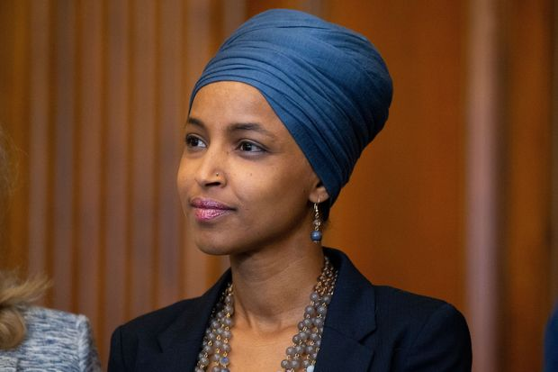 |
| 2021-06-17 18:28:00 | Books | ‘Charlie Brown’s America’ Review: ‘Peanuts’ and Politics | Charles M. Schulz’s comic strip was, on one level, all charm. But on another it delivered cunningly ambiguous social commentary. | 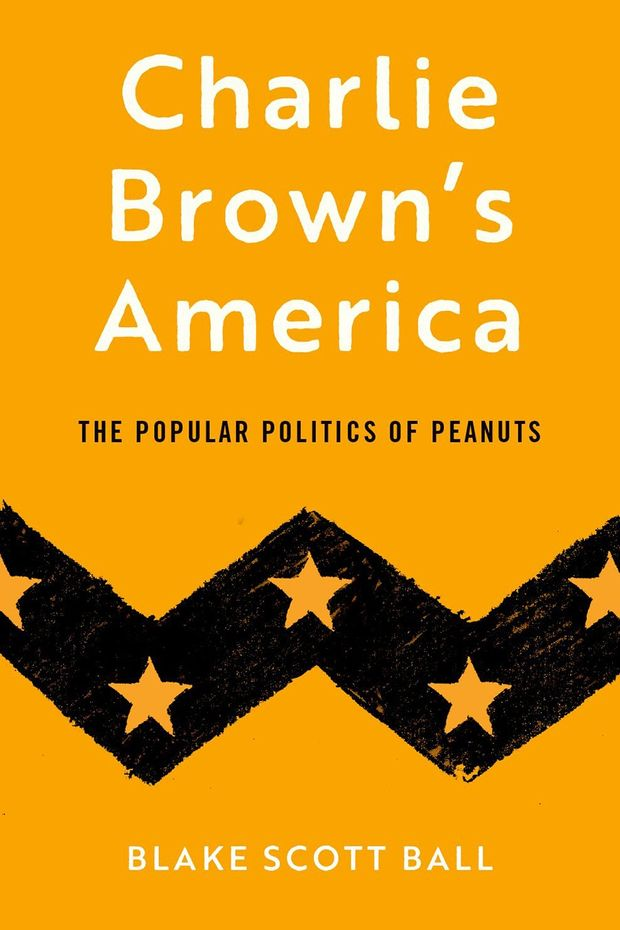 | |
| 2021-06-17 18:21:00 | World | Israel Strikes Militant Targets in Gaza After More Arson Attacks | Latest exchange rattles month-old cease-fire between Israel and Hamas that mediators are trying to keep from falling apart | JERUSALEM—The Israeli military hit the Gaza Strip with a series of airstrikes Thursday night, rattling a shaky month-old cease-fire between the two sides that mediators are trying to keep from falling apart. Soon after, for the first time in nearly a month, air raid sirens sounded the alarm in southern Israel when Gaza militants used heavy machine guns to fire across the border, the Israeli military said. There were no immediate reports of injuries or deaths, but the escalating violence threatens to unravel the tenuous May 21 truce that brought an end to 11 days of fighting that killed more than 250 people in Gaza and 13 others in Israel. Lt. Gen. Aviv Kochavi, the Israeli military’s chief of staff, directed the nation’s forces to prepare for the possibility the truce could crumble. Gen. Kochavi told his forces to prepare “for a variety of scenarios including a resumption of hostilities, in the face of continuing terror activities from the Gaza Strip,” the Israeli military said. |
|
| 2021-06-17 18:13:00 | Life & Arts | The Herb Revolution in American Cooking | A few basic herbs were once thought to be enough, but now our kitchens teem with the flavors of cilantro, lemongrass, Thai basil and much more. | Imagine cooking and eating without fresh herbs. It would be perfectly possible, but oh, it would be dull. Think of eating a piece of warm focaccia that lacked the uplift of rosemary. Or consider Mexican food without the grassy hit of cilantro, or a bowl of Vietnamese pho soup deprived of its essential mint. Cooking without herbs might still be nourishing, but half the pleasure would be gone. The rise of fresh herbs is one of the happiest stories of modern eating. Every time you use them in your cooking, you are recognizing that food is something more than mere fuel. When you take the trouble to add tarragon to a roast chicken, put mint leaves in a pitcher of water, or adorn a platter of roast beetroot with feathery leaves of dill, you are saying that flavor matters. The person who cooks with herbs is making a stand for joy. Most Americans are using far greater quantities of herbs—and different ones—than in the past. Sales of fresh herbs in the U.S. have tripled since 2000 from 1% of all fresh produce sales to 3%. Fresh herbs used to seem like a fancy luxury ingredient compared with an old-fashioned jar of dried oregano, but a survey in 2018 by Shenandoah Growers, a Virginia-based produce firm, suggested that more than half of all shoppers now regularly buy fresh herbs. This growth is being driven partly by the rise in popularity of Asian cuisines. Along with the older Western stalwarts of parsley and chives, Americans are increasingly buying Thai basil and makrut lime leaves and fresh methi leaves (a grassy and pungent herb much used in Indian cooking). These trends can also be seen in Europe. Germany was traditionally a land of dill and parsley, but cooks there have now embraced cilantro and lemongrass. What, actually, is an herb? Sometimes the term is used interchangeably with “spice,” but technically, an herb—which comes from the Latin herba, meaning grass—comes from the green leaf of a plant, whereas spices come from other parts such as seeds, bark, roots and buds. |
|
| 2021-06-17 17:55:00 | A Closer Look | Selections from ‘Chirri & Chirra, The Rainy Day’ by Kaya Doi, translated by David Boyd | |||
| 2021-06-17 17:54:00 | A Closer Look | Selections from ‘What Does Little Crocodile Say?’ by Eva Montanari | |||
| 2021-06-17 17:40:00 | U.S. | Supreme Court Rules Cargill, Nestle Can’t Be Sued in Child-Labor Case | Justices say allegations of abuse in Ivory Coast don’t have enough connection to the U.S. | WASHINGTON—The Supreme Court ruled Thursday that Nestlé USA and Cargill Inc. can’t be sued in U.S. courts for abuses allegedly committed in Ivory Coast, where plaintiffs accused the food-processing giants of obtaining cocoa from plantations that relied on the forced labor of children. The court, in a decision by Justice Clarence Thomas, said the plaintiffs’ case didn’t have enough of a connection to the U.S. to proceed. “Nearly all the conduct that they say aided and abetted forced labor—providing training, fertilizer, tools, and cash to overseas farms—occurred in Ivory Coast,” Justice Thomas wrote. The decision was the latest in a series of cases curbing the reach of the Alien Tort Statute, a 1789 law authorizing foreign citizens to sue in federal court over violations of international law. Justice Thomas said the plaintiffs were impermissibly seeking to apply that law beyond U.S. borders. The court’s central holding came on an 8-1 vote, though justices splintered on some of the finer points of the case. |
|
| 2021-06-17 17:37:00 | World | U.S. Embassy in Kabul Warns of Covid-19 Emergency | More than 100 embassy staff in Afghanistan test positive; personnel ordered to avoid leaving quarters | The U.S. Embassy in Kabul on Thursday ordered staff to avoid leaving their quarters to cope with a surge of Covid-19 cases that has filled intensive care units and led to multiple evacuations and the death of at least one staff member. An internal management notice reviewed by The Wall Street Journal described a chaotic situation at the embassy. Some 114 coronavirus cases have been confirmed among staff, it said. The rapid spread of the illness has stretched medical facilities, according to the notice, forcing health units to create temporary wards to deal with an influx of patients. The intensive care unit at the U.S. military hospital that supports the embassy is at full capacity and several staff members have been evacuated. “We must break the chain of transmission to protect one another and ensure the Mission’s ability to carry out the nation’s business,” said the notice, which was approved by U.S. Ambassador Ross Wilson. While the embassy has been downsized in recent years as the U.S. has prepared to end its 20-year military engagement in Afghanistan, hundreds of staff continue to serve there. The notice encouraged staff to report violations of the orders and warned that those failing to comply risked being sent home on the next available flight. |
|
| 2021-06-17 17:34:00 | Real Estate | Allegations Against Cedar Realty Trust CEO Are Rejected | Arbitrator clears Bruce Schanzer of harassment claim and says a former executive failed to establish her claims of either discrimination or retaliation | An arbitrator has rejected a former top Cedar Realty Trust executive’s claims of sexual harassment, discrimination and retaliation against the chief executive officer of the publicly listed shopping-center landlord. Nancy Mozzachio, Cedar’s chief operating officer from 2014 to 2016, alleged in a 2017 state court lawsuit in Brooklyn, N.Y., that CEO Bruce Schanzer wrongfully fired her after she threatened to consult a lawyer about reporting sexual harassment. She also said in the suit that Mr. Schanzer repeatedly leered at her and other female employees and made inappropriate comments. Mr. Schanzer denied the allegations. In 2018, Cedar Realty’s board said that an independent investigation found no merit to Ms. Mozzachio’s complaints and that her “suit is nothing more than a calculated maneuver to do an end-run around pre-existing arbitration and to harass and harm Mr. Schanzer.” The 2017 lawsuit was later referred to private arbitration because the terms of her employment contract required it. In a ruling handed down in December 2019 and unsealed in May, the arbitrator said Cedar Realty had legitimate reasons for terminating Ms. Mozzachio, and denied her other claims. |
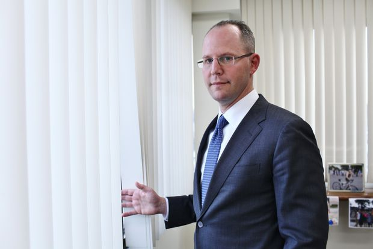 |
| 2021-06-17 17:32:00 | U.S. | St. Louis Couple Who Waved Guns at Protesters Plead Guilty to Misdemeanors | Patricia and Mark McCloskey had said that George Floyd demonstrators who marched past their home last year were trespassing | A St. Louis couple who pointed guns at social-justice demonstratorslast year pleaded guilty Thursday to misdemeanor charges and agreed to give up the weapons they used during the confrontation. Patricia McCloskey pleaded guilty to misdemeanor harassment and was fined $2,000. Her husband, Mark McCloskey, pleaded guilty to misdemeanor fourth-degree assault and was fined $750. When several hundred demonstrators marched past their home in June 2020, the couple waved weapons at them. They said the protesters were trespassing and that they feared for their safety. The McCloskeys, both of them lawyers in their 60s, wore blue blazers and spoke calmly in answering questions from Judge David Mason during Thursday’s hearing. Judge Mason asked Mr. McCloskey if he acknowledged that his actions put people at risk of personal injury. He replied, “I sure did, your honor.” Mr. McCloskey, who announced in May that he was running for a U.S. Senate seat in Missouri, was unapologetic after the hearing. |
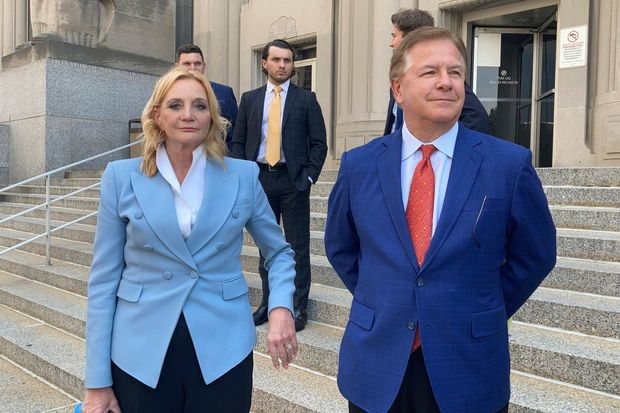 |
| 2021-06-17 17:31:00 | Politics | Biden Signs Bill Making Juneteenth a Federal Holiday | President calls it a day to remember ‘moral stain’ and ‘terrible toll’ slavery took on the nation | WASHINGTON—President Biden signed a bill Thursday making Juneteenth a national holiday commemorating the end of slavery in the U.S., calling it a day to remember the “moral stain, the terrible toll that slavery took on the country.” The holiday was set to take effect immediately. The U.S. Office of Personnel Management said on Twitter Thursday that because the 19th falls on a Saturday this year, “most federal employees will observe the holiday tomorrow, June 18th.” This is the first new federal holiday created by Congress in nearly four decades. The bill passed the Senate unanimously on Tuesday and was approved 415-14 in the House Wednesday. “Great nations don’t ignore their most painful moments,” Mr. Biden said during a signing ceremony in the East Room of the White House, surrounded by lawmakers and guests, including Opal Lee, a Texas activist who campaigned to make Juneteenth a national holiday. “Great nations don’t walk away. We come to terms with the mistakes we made. And remembering those moments, we begin to heal and grow stronger.” Juneteenth—also known as Emancipation Day, Black Independence Day and Jubilee Day—marks the 1865 date when Maj. Gen. Gordon Granger arrived with federal troops in Galveston, Texas, and issued an order freeing the nation’s last slaves. This came more than two months after the end of the Civil War and about 2½ years after President Abraham Lincoln had issued the Emancipation Proclamation freeing slaves in the Confederacy. |
|
| 2021-06-17 17:29:00 | Opinion | A Second Death Tax Will Hit Inflated Gains | For all the talk about “corporate short-termism,” the reality is that no one thinks more about the long term than wealthy families. | Regarding Hank Adler and Madison Spach’s “Biden’s New Death Tax and a New York Widow” (op-ed, June 14): For all the talk in the halls of government and among the business elite about “corporate short-termism,” the reality is that no one thinks more about the long term than wealthy families. Unlike politicians (who live and die in two-to-six-year cycles), these families are thinking today about how to preserve wealth for generations. And lest you think that they are simply hoarding yachts, the majority of families passing on large amounts of wealth are small- and medium-size business owners, with dozens or hundreds of employees relying on them. They built their businesses through decades of hard work, and spend an inordinate amount of time thinking about whether their company will survive for the next hundred years. Anyone who wants to prevent the short-termism prevalent in corporate America should think twice about creating disincentives to long-term planning via the death tax. Families that plan poorly will squander their wealth soon enough, but those who plan well can help stabilize the national economy far more effectively than sticky-fingered politicians. Jonathan Slonim New York |
 |
| 2021-06-17 17:25:00 | Opinion | Has the Left or Right Helped Blacks More? | The history of the Democratic Party (Mr. Collopy’s left) has been one of the biggest hindrances of black progress. | In response to Jason L. Riley’s “Liberals Choose Racial Catharsis Over Progress for Blacks” (Upward Mobility, June 2), William F. Collopy makes the point that the left has done a better job than the right in addressing racial deficiencies in our country (Letters, June 14). He quotes Fredrick Jackson Turner—“the aim of history, then, is to know the elements of the present by understanding what came into the present from the past”—to support his position. But the quote and facts contradict his argument. The history of the Democratic Party (Mr. Collopy’s left) has been one of the biggest hindrances of black progress. Its history includes fighting to retain slavery, the creation of Jim Crow laws, and under FDR the creation of “redlining” to prevent the federal government from giving housing loans to areas (mostly minority) deemed too risky, which today has morphed into limiting school choice for blacks. The Civil Rights Act of 1964 was filibustered by Democrats but eventually passed because a much higher percentage of Republicans voted for the bill than Democrats in both the House and Senate. The 1994 crime bill, passed by Democrats and signed by President Bill Clinton, resulted in a disproportionate increase in the number of blacks being incarcerated. If Mr. Collopy believes in the Turner quote, he would realize “what came into the present from the past” is a Democratic left that uses identity politics and racial division to retain power, not help the black community—as every American city the Democrats have controlled for decades unfortunately demonstrates. Ken Dropek Houston |
 |
| 2021-06-17 17:24:00 | Film Review | ‘Luca’ Review: A Matter of Scale(s) | In this new Pixar flick, which skips the big screen for a Disney+ debut, two young sea monsters living by the Italian Riviera turn into teenage boys on dry land. | ||
| 2021-06-17 17:24:00 | Opinion | The Fed Is Following the Rising Sun on Inflation | The Fed has taken a leaf out of the Bank of Japan’s book. | In “The Fed’s Risky Fill-the-Punch-Bowl Strategy” (op-ed, June 8), Kevin Warsh claims that: “No other major central bank has adopted anything like the Fed’s new framework.” The Bank of Japan has. Under its new framework, the Fed seeks to achieve inflation that averages 2% over time and, because inflation has been running consistently below that level, now “[aims] to achieve inflation moderately above 2% for some time.” In September 2016, the Bank of Japan introduced a “yield curve control” framework, an element of which is an “inflation-overshooting commitment” whereby it pledges to continue to expand the monetary base, or “monetize the fiscal deficit” in common parlance, until inflation exceeds its 2% target and “stays above the target in a stable manner.” The Fed has taken a leaf out of the BOJ’s book. Paul Sheard, Ph.D. Harvard Kennedy School New York |
|
| 2021-06-17 17:22:00 | Television Review | ‘Physical’ Review: Dancing Away the Pain | Rose Byrne plays a stifled housewife turned aerobics star in this new ‘80s-set comedy from Apple TV+. | ||
| 2021-06-17 17:20:00 | Opinion | ‘It’s Only a Play’ Review: Cheering Up With Terrence McNally | Stream George Street Playhouse’s production of this meta comedy about the delusion of Broadway. | Most of the theatrical webcasts I’ve reviewed since the start of the Covid-19 pandemic and the closing of American theaters have been dramas. My guess is that theater companies deliberately chose to steer clear of comedies (serious ones excepted) because they feared not being able to mount them effectively in the absence of live audiences. Laughter is the kindling that makes stage comedy catch fire by tightening the timing of the actors, and in its absence a performance can easily grow slack and unsure. Good direction—and editing—can help offset this problem, and the online productions of Theresa Rebeck’s “Bad Dates” and Becky Mode’s “Fully Committed” by New Jersey’s George Street Playhouse that I reviewed in March worked extremely well. The catch, however, is that these are one-person shows, and while Andréa Burns and Maulik Pancholy were both terrific, they didn’t have other actors to bounce their punch lines off of. This time, though, George Street Playhouse is webcasting “It’s Only a Play,” Terrence McNally’s seven-actor farce about what happens at the party immediately following the Broadway premiere of a play that turns out to be awful in every conceivable way (though the particulars of its awfulness are shrewdly left to us to imagine). First performed in 1982, “It’s Only a Play” finally made it to Broadway in 2014 in a revival starring Nathan Lane and Matthew Broderick that ran for 274 performances. It was, needless to say, Messrs. Lane and Broderick who filled the seats, but I’ve since reviewed a 2016 staging by Florida’s GableStage that proved that McNally’s play needs no stars to shine. This production, directed by Kevin Cahoon and taped to broadcast-quality standards in an empty theater at the New Brunswick Performing Arts Center, is as delightful as its predecessors. Not only are Mr. Cahoon’s staging and the cinematography and editing of Michael Boylan exemplary, but every other element of this production is first-class, including the cast, all of whose members take care of comic business with contagious zest. This being a farce, a fair amount of preliminary explanation is necessary, so here goes: James Wicker (Zach Shaffer) is a former stage actor who now appears on a hit TV series. Peter Austin (Andy Grotelueschen) is his best friend and the author of “The Golden Egg,” in which James was offered the leading male role. James turned it down because he thought—though Peter doesn’t know it—that the play was bad. Nevertheless, he’s flown back to New York to attend opening night and the wait-for-the-reviews party, at which are present the coke-snorting female lead (Julie Halston), the arrogant director (Greg Cuellar), the rich but very nice producer (Christine Toy Johnson), a gregarious but very nasty critic (Triney Sandoval), and a stupid waiter (Doug Harris) who wants to be (you guessed it) an actor. Each is introduced in his or her turn, and McNally lards the dialogue with inside jokes so as to keep the audience on board long enough to wind up the comic mainspring of his plot: “The theater has become the Statue of Liberty for movie actors: ‘Give us your tired, your poor, your washed-up, your strung-out.’” Fortunately McNally has contrived things so that you don’t have to get all the inside jokes to find them amusing—he compliments the audience by taking its comprehension for granted—and there are plenty of other one- and two-liners to divert your attention if you’ve never heard of Tommy Tune or the Theatre of Cruelty: “I dropped my cellphone getting out of the limo and it went completely dead on me. I haven’t felt this cut off since I was in rehab.” To be sure, the first act sags a bit at midpoint, but you’ll be far too charmed by then to notice. |
 |
| 2021-06-17 17:19:00 | Film Review | ‘Rita Moreno: Just a Girl Who Decided to Go for It’ Review: Surviving—and Thriving | A new documentary by Mariem Pérez Riera spotlights the vibrant 89-year-old actress’s winning presence, on camera and off, over her still-active career. | ||
| 2021-06-17 17:17:00 | Television Review | ‘College Bowl’ Review: A Smart Comeback | Ex-NFL star Peyton Manning and his older brother, Cooper, make the grade as the amusing new hosts of the NBC-revived quiz show, where $1 million in scholarships is at stake. | ||
| 2021-06-17 17:09:00 | Opinion | Will Covid Rules Ever End? | Politicians aren’t the only ones who enjoy telling us what to do. | The Covid emergency is over and this week even governors who have been the most hostile to liberty and good sense are rescinding many of their most destructive orders. Unfortunately the unhealthy desire to issue Covid diktats without a careful study of costs and benefits is not limited to politicians. As for the good news of the day, Craig Mauger and Beth LeBlanc report for the Detroit News on a long overdue announcement: But as in other “reopening” states, some government rules remain. And even outside of government, the desire to issue Covid orders is still alive and well. There’s an important debate to be had about pending rules from businesses and schools. Perhaps social media companies will allow it to occur on their platforms. Harvard Medical School’s Martin Kulldorff announces today on Twitter: In the op-ed which Silicon Valley firms may or may not be willing to show to consumers, the Harvard prof and Stanford University’s Dr. Jay Bhattacharya write that the “idea that everyone must be vaccinated against COVID-19 is as misguided as the anti-vax idea that no one should.” They add: But the two professors warn against mandating a Covid vaccine for children who face little risk from the virus, because even a relatively safe vaccine carries some small risk of an adverse event, and in this case it may be greater than the small risk young people face from Covid. |
|
| 2021-06-17 17:04:00 | U.S. | Supreme Court Leaves Affordable Care Act Intact | The high court preserves the 2010 healthcare law, the signature legislative accomplishment of the Obama administration | WASHINGTON—The Supreme Court rejected a Republican-led challenge to the Affordable Care Act in a 7-2 decision, preserving the 2010 healthcare law for the third time. Texas and other Republican-leaning states, backed by the Trump administration, sought to strike down the law on technical arguments after Congress reduced to zero the tax penalty for failing to carry health insurance. Thursday’s decision, written by Justice Stephen Breyer, found that none of the plaintiffs suffered any injury from zeroing out the penalty and thus lacked legal standing to bring the lawsuit at all. “We do not reach these questions of the Act’s validity,” Justice Breyer wrote. “Texas and the other plaintiffs in this suit lack the standing necessary to raise them.” The decision underscored that the court, even with the recent addition of more conservative justices, at times is still able to find broad coalitions supporting middle-ground outcomes in hot-button cases. Joining the majority were Chief Justice John Roberts and Justices Clarence Thomas, Sonia Sotomayor, Elena Kagan, Brett Kavanaugh and Amy Coney Barrett. |
 |
| 2021-06-17 16:56:00 | Risk & Compliance Journal | Guidance on Charging Compliance Chiefs Could Bring Clarity, but Some Seek More Protections | Without changes at the corporate level, such as different reporting lines, many compliance professionals could continue to face liability worries | 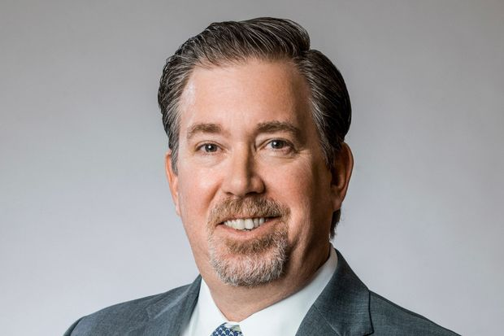 | |
| 2021-06-17 16:56:00 | U.S. | Supreme Court Exempts Catholic Foster-Care Agency From Nondiscrimination Law | Catholic Social Services is entitled to city contract despite Philadelphia ordinance requiring contractors to treat same-sex couples equally, court rules | WASHINGTON—The Supreme Court unanimously ruled Thursday that a Catholic social-service agency was entitled to a Philadelphia contract even if its religious views prevented it from compliance with local policies forbidding discrimination against same-sex couples. The court’s decision, by Chief Justice John Roberts, was a narrow one, stopping short of fundamentally extending the accommodations for religious exercise that Catholic Social Services—and several conservative justices in concurring opinions—argued the Constitution required. The city of Philadelphia contracts with private agencies to screen foster parents for children in need. While a broad nondiscrimination policy is written into its contracts, Chief Justice Roberts observed that the agreements also authorize the city’s human-services department to grant exceptions. Catholic Social Services, which for decades has received city contracts, was entitled to such an exception, the chief justice wrote, because the city can grant them for secular reasons. The city’s interest in equal treatment for same-sex couples—and in caring for children in need—wasn’t impaired, the court found, because some 20 other agencies with foster-service contracts are available to work with married LGBT foster parents. A 1990 precedent, Employment Division v. Smith, finds no constitutional problem if religious exercise is curbed by a law that generally applies to everyone. Lower courts, relying on that precedent, ruled for the city. |
|
| 2021-06-17 16:45:00 | Politics | Why Is ACA Still Controversial 11 Years After Healthcare Law Known as Obamacare Was Passed? | For the third time, the Supreme Court rejected a challenge to a law opposed by most Republicans | The Supreme Court turned back the latest challenge to the Affordable Care Act, leaving the healthcare law known as Obamacare in place. Here is a look at the law and the views of its supporters and detractors. The Affordable Care Act was passed by a Democratic-controlled Congress and signed into law by then-President Barack Obama in 2010, and has had a sweeping impact on the U.S. healthcare system. The law expanded eligibility for Medicaid, though about a dozen states have still not adopted the change. It created online marketplaces where consumers could get plans from insurers, and a system of federal subsidies that help most enrollees pay for the coverage. Under a law that passed this March, eligibility for the subsidies expanded to include more people. The ACA also rewrote the rules around insurance. Because of the law, insurers can no longer deny coverage or charge more for plans based on a person’s pre-existing health conditions. They can’t cap the amount they pay out in benefits. Also, they have to spend a set share of the premiums they receive on healthcare-related costs, limiting the portion that goes to profits and administration. Still, most Americans, particularly those with workplace coverage or Medicare, felt only limited impact from the ACA. Employer insurance began covering preventive care for members, free of charge, while young adults up to 26 years old were added to their families’ coverage. Some Medicare beneficiaries saw their costs for drugs go down. Supporters of Obamacare point to its many popular provisions, including the rules against denying coverage to those with pre-existing health conditions. They have said that the law also protects vulnerable patients by ensuring that the insurance they get is robust enough to shield them from the biggest healthcare costs. The law capped what most consumers can be asked to pay out of their pockets for care. |
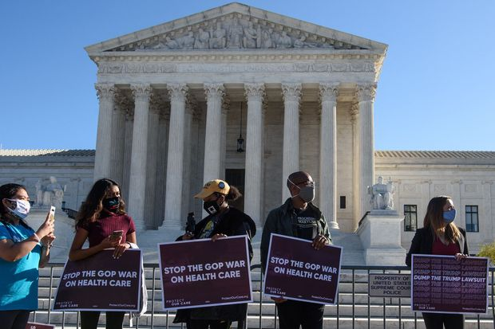 |
| 2021-06-17 16:26:00 | Politics | The Affordable Care Act: A Brief History | How new provisions, Supreme Court challenges and Congress votes have shaped the healthcare law | Since its passage in 2010, the Affordable Care Act has grown to provide health coverage to more than 31 million people when its Medicaid expansion is included, and survived three challenges before the Supreme Court. Here’s a look at notable changes the law has seen over the years. Write to Stephanie Armour at stephanie.armour@wsj.com |
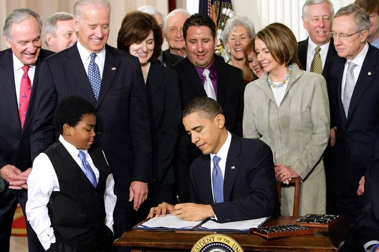 |
| 2021-06-17 16:23:00 | Politics | Bipartisan $1 Trillion Infrastructure Package Gains Steam | President Biden is reviewing the proposal as some Democrats craft a separate, bigger package | WASHINGTON—A growing bipartisan group of lawmakers and the White House haggled over how to finance a roughly $1 trillion infrastructure proposal, awaiting feedback from President Biden as Democrats began discussions on a separate economic package that could cost up to $6 trillion. Since negotiations between Mr. Biden and a group of Senate Republicans collapsed last week, an alternative set of Republican and Democratic senators have held talks on a infrastructure plan that would spend $973 billion over five years, with $579 billion of that funding above expected baseline levels. Initially a group of five Democrats and five Republicans, the group expanded to include 11 Republicans and 10 members of the Democratic caucus on Wednesday. According to a draft outline of the proposal, the plan would dedicate $110 billion in new spending to bridges and roads, $65 billion to expanding access to broadband, and $48.5 billion to public transit, among other priorities. Extended over an eight-year timeline, the plan would spend a total of $1.2 trillion. The draft, first obtained by Politico, also includes a number of ways to finance the package, a central issue in the talks. It proposes indexing the gas tax to inflation, increasing IRS enforcement to collect unpaid taxes, collecting an annual fee from electric vehicles, and repurposing existing federal funds. An infrastructure financing authority, public-private partnerships, and direct-pay municipal bonds are also included as possible financing mechanisms. But Senate aides familiar with the negotiations said the draft doesn’t represent the group’s final proposal. The White House has opposed raising the gas tax and placing fees on electric vehicles, and Democrats in the group met with top White House officials on Capitol Hill Wednesday. White House officials were expected to brief Mr. Biden on the negotiations after his return from his trip abroad. |
|
| 2021-06-17 16:17:00 | CFO Journal | Rio Tinto Makes Its Interim Finance Chief Permanent | Peter Cunningham was named CFO of the mining company, which has faced pushback after destroying ancient caves in Australia | 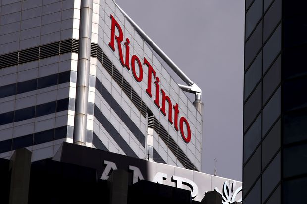 | |
| 2021-06-17 15:55:00 | Life & Arts | Should You Get Paid to Take a Bike Ride? | A behavioral economist answers questions on seeking company reimbursement for off-duty exercise, reducing last-minute jitters and improving results from job interviews | ||
| 2021-06-17 15:35:00 | Life & Arts | Naomi Osaka and Rafael Nadal Withdraw From Wimbledon | Nadal will also skip the Olympics but Osaka indicated she will play in Tokyo, returning from her mental-health break | 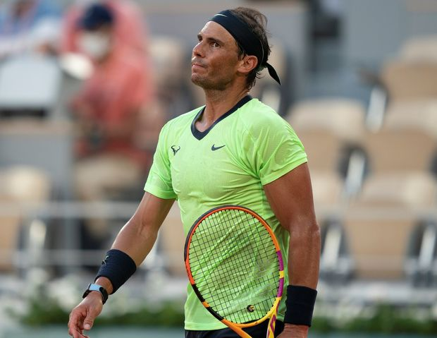 | |
| 2021-06-17 15:23:00 | Life & Arts | Why Women—Like Rihanna—Are Cutting Their Hair Short | As re-entry beckons, salons are reporting a rise in 1920s-style liberating bobs and pixie cuts. Here, what to consider before you take the leap. | ||
| 2021-06-17 14:57:00 | Politics | Critical Race Theory: What It Means for America and Why It Has Sparked Debate | A concept developed by academics in the 1970s has triggered political debate and controversy in everything from school curricula to workforce trainings | References to critical race theory have become more prominent and controversial over the past year. Such references have been the subject of fights over school curricula at the state, local and federal level. There has also been debate over whether elements of critical race theory should be included in both public- and private-sector workforce training. Here’s an explanation of the theory, and an overview of some of the debates that have referenced it. Critical race theory is an academic concept first developed by legal scholars in the early 1970s. It argues the legacy of white supremacy remains embedded in modern-day society through laws and institutions that were fundamental in shaping American society. Generally speaking, it rejects the idea that laws are inherently neutral, even if they are sometimes applied unevenly. Its backers say that American society, framed by the Constitution, gives a leg up to white people—but that it could be made more equitable if more white people acknowledge societal advantages of having been born white. “Critical race theory is a radical departure from the way in which the law analyzed constitutional and political issues,” said Luke Harris, an associate professor of American politics and Constitutional law at Vassar College in New York. |
|
| 2021-06-17 14:40:00 | Economy | Fed Reverse Repos Surge to Record of $756 Billion After Rate Tweak | Surge follows the Fed moving the facility’s return rate up to 0.05% from zero | A day after the Federal Reserve boosted the return on a key part of its interest rate control tool kit, a record $756 billion flowed into the central bank’s reverse repo facility on Thursday. The reverse repo facility takes in cash primarily from money-market funds, as well as government-sponsored companies and banks. Until Wednesday, this facility offered a return of zero percent to eligible users, which the Fed moved up to 0.05%, while at the same time lifting another rate, called the interest on excess reserves rate, to 0.15% from 0.10%. Over the past few months, cash has been flooding into the reverse repo facility. After years of negligible activity marked by periodic spikes, more money began to flow in starting this spring, and has hovered at around half a trillion dollars daily over recent days. The Fed said Wednesday that the rate changes were technical and designed to smooth money-market conditions and ensure the federal-funds rate, its chief lever for controlling the economy’s momentum, stays within the 0% to 0.25% range. The reverse repo rate and interest on excess reserves rate exist to help keep the funds rate within that range. At his press conference after the Federal Reserve meeting on Wednesday, central bank leader Jerome Powell said “the reverse repo facility is doing what it’s supposed to do, which is to provide a floor under money-market rates and keep the federal-funds rate well within its—well within its range. So we’re not concerned” about the current level of usage. |
 |
| 2021-06-17 14:34:00 | Markets | Kroger’s Cart Overfloweth | Supermarket giant had strong quarter and still has room to improve as normalcy returns | How are the grocery aisles looking? Bustling, judging by Kroger ’s latest results. Kroger on Thursday morning said identical-store sales excluding fuel declined 4.1% in its quarter ended May 22, a smaller drop than the 6.6% that analysts had projected. Some decline was unavoidable given that the same quarter last year was the peak Covid-19 stockpiling period. Compared with the same quarter of 2019, total sales including fuel grew 10.9%. Signs show customers are reverting to pre-pandemic behavior: Foot traffic at Kroger returned to 2019 levels as of May, according to Placer.ai, and the company says that customers started shopping more frequently instead of consolidating trips. Still, some helpful pandemic-era behaviors are sticking around, including higher consumption of fresh products such as meat and produce, which are higher-margin categories. Consumers also are continuing to trade up to premium products and are buying more online. Though inflation is dominating headlines, it doesn’t seem to be affecting supermarkets in any serious way so far. Kroger noted on its earnings call that inflation has been at the low end of its expectation of 1% to 2%. In fact, grocers wouldn’t mind more of it. Kroger Chief Executive Rodney McMullen said on the call that 3% to 4% is the sweet spot—similar to what Albertsons Cos. has said. At that level, customers don’t overly react to price increases while the company itself is able to take advantage of fixed costs. The latest quarter’s results were strong enough that Kroger increased its revenue and profit guidance for the full year, sending its shares about 5% higher Thursday afternoon. |
|
| 2021-06-17 14:31:00 | Life & Arts | Wine Tasting 101: An Accessible Guide to Key Grapes, Terms and Techniques | In part one of a three-part introduction to wine tasting, pairing and buying, our wine columnist schools a recent college grad in the essentials |  |
|
| 2021-06-17 13:38:00 | Life & Arts | 2022 Porsche 911 GT3: Step on the Gas (While It Lasts) | The GT3, a barely street-legal track toy, boasts Porsche’s third-most powerful internal combustion engine on the 911 platform—the last the company will electrify. Dan Neil takes it for a spin. | ||
| 2021-06-17 13:29:00 | U.S. | U.S. to Invest More Than $3 Billion in Covid-19 Antiviral Development | Medicines, which would be designed to be taken at home and treat early symptoms, expected to arrive by year’s end | WASHINGTON—The Biden administration will invest more than $3 billion on developing and manufacturing antiviral pills to treat coronavirus, the Department of Health and Human Services said Thursday. “New antivirals that prevent serious Covid-19 illness and death, especially oral drugs that could be taken at home early in the course of disease, would be powerful tools for battling the pandemic and saving lives,” said Dr. Anthony Fauci, chief medical adviser to President Biden and the nation’s top infectious-disease expert. The $3.2 billion investment will be allocated from the $1.9 trillion coronavirus relief package Mr. Biden signed into law in March. In a briefing Thursday, Dr. Fauci said the funding could accelerate clinical trials “already in progress” for some antiviral pills and potentially make some of them available by year’s end. The oral antiviral medicines would be designed to be taken at home and to treat symptoms early in the course of infection. Dr. Fauci said coronavirus vaccines “remain the centerpiece of our arsenal” in fighting the pandemic, but noted antiviral drugs would serve as an important complement in preventing severe illness and hospitalization. Researchers are testing antivirals in pill form that could become a kind of Tamiflu for Covid-19. |
|
| 2021-06-17 13:04:00 | Politics | Yellen Declines to Offer Position on State-Tax Deduction Cap | Lawmakers press Treasury secretary for details as some Democrats are pushing for cap’s repeal in any tax legislation | WASHINGTON—Treasury Secretary Janet Yellen repeatedly declined to offer a clear administration position on the deduction for state and local taxes during a House hearing, leaving vagueness on an issue that will be the subject of tense negotiations among Democrats considering President Biden’s fiscal agenda. Under pressure from House Democrats and Republicans on Thursday to take a position, Ms. Yellen wouldn’t say whether the Biden administration favors repealing the $10,000 cap on the deduction. Eliminating that limit would cut taxes for high-income households and disproportionately benefit residents of high-tax Democratic-leaning states such as New York, New Jersey and California. Mr. Biden’s budget is silent on the deduction cap, which was created in the 2017 tax law and is scheduled to lapse after 2025, along with many of that law’s other provisions. “He recognizes that it’s a tremendous concern in a number of states and wants to work with Congress to see if there’s a way to mitigate the harms that it’s caused,” Ms. Yellen said of the president during a Ways and Means Committee hearing. “But he has not made a proposal in the budget to do so.” Rep. Kevin Brady (R., Texas), the committee’s top Republican, pressed Ms. Yellen on whether Mr. Biden would support the cap’s elimination if lawmakers included it in a compromise infrastructure package. “I’m not going to negotiate here on behalf of the president,” she said. |
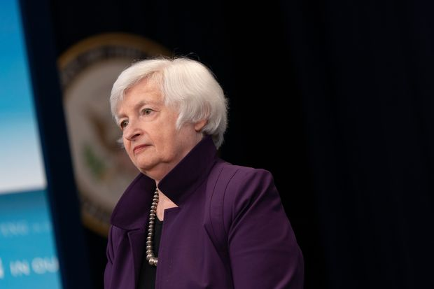 |
| 2021-06-17 12:50:00 | Opinion | America’s Old Believers Need to Move Past Donald Trump | He wasn’t up to the task of preserving democracy, civic sanity, and freedom of speech and thought from progressive elites. | Let us speak of the Old Believers, clingers to their God and guns, to the old pronouns and the heterosexual marriages. Theirs is still, despite all, a Norman Rockwell version of things—manifest, for example, in a primitive confidence in the doctor who, once upon a time, would swat a newborn’s rump and announce, with hieratic certitude, “It’s a boy” or “It’s a girl.” The Old Believers did not think that the doctor, on a whim, “assigned” the baby’s “gender.” They held that the decision had been made months earlier, higher up the biological chain of command, and was to be respected as part of the scheme of things. Four centuries ago in Russia, there occurred an internal clash of religious ideas (old ways vs. new ways) that had points in common with the schism dividing the U.S. in the 21st century. In Russia, too, there were progressives, who embraced reforms promulgated by Nikon, patriarch of Moscow, and anathematized the Old Believers, who held fast to the earlier religion. The latter were also known as Old Ritualists, raskolniki, and were led by the archpriest Avvakum. Avvakum was not exactly Donald Trump, but he stood for the earlier practice and for a mystic version of old Russia and its faith. The Old Believers tended to be located far from cosmopolitan centers. They were found in Siberia, in the Urals—in, so to speak, the red states of the Russian empire. The Russian elites—tilting westward, speaking French among themselves—held such primitives in contempt. You may recall that in “War and Peace,” Prince Bolkonski’s pious daughter, Marya, befriends Old Believers but, because of her wrathful father’s prejudices, greets them furtively, leading them into the house by the back door. These days in places like Martha’s Vineyard and Beverly Hills, you find the Old Believers similarly shunned and feared. Years ago, when my father was an editor at the Saturday Evening Post, which printed Rockwell’s iconic covers, a squire in Bucks County, Pa., told him with cheerful condescension, “I take your magazine for the servants.” The mood is darker now. Emerging from the Covid seclusion, I am startled by the shudder of aversion, hatred and even fear with which America’s polite progressive society (lesser Bolkonskis and Rostovs, the Tesla classes) greet the mere mention of a Republican or a conservative. It’s a reflex, a wince of horror and disapproval. If you pronounce the name Trump, they go into convulsions. |
|
| 2021-06-17 12:47:00 | Opinion | The Faith of an Autistic Man | It surprises people that my relationship with God is based on logic, not emotion. | It was an unlikely connection. A literal, logical person, challenged by basic verbal communication, and an unseen spirit, who communicates through the Word. Yet I reached out to God, and he reached out to me. We both answered the other’s call. As an autistic person, I struggle to make connections. I did not communicate much as a young child and only barely as an adolescent. Even now, my thoughts exist independent of language. My mind undergoes a vast translation process, back and forth, to relate to the human world. Yet the Christian faith spoke to me through one word: love. I often feel as if, by relying on only a single word, God designed this message for people like me. There is no complicated work to interpret that message. You are loved by your Creator. You are commanded to love others and also to love yourself. It frequently surprises people that my faith is based entirely on logic and reason. It has no emotional base. Many may wonder how that squares with the message of love. But to me, it comes down to the principle of mutual recognition: If you believe in a Creator, then you believe that the Creator knows his own handiwork. You believe that each of us has a place, has equal value, and fully belongs in this world. There is not one correct path to life or to God. Mine may be unusual, but it can still be strong. I first contemplated the Christian faith when I was in high school and began engaging more with the outside world. Beyond autism, I have a metabolic condition and cerebral palsy. The limits placed on me by my disabilities were a daily reminder of my own brokenness. The only part of my body that was not negatively impacted was my mind. And I used it to come to a fuller understanding of God. |
|
| 2021-06-17 11:52:00 | World | Kenneth Kaunda of Zambia, Last Leader of Africa’s Liberation Era, Dies at 97 | Founding president’s long political career included periods as freedom fighter, autocrat and elder statesman, marked by his yielding of electoral power | Africa’s postcolonial leaders often fit a familiar type: the freedom fighter, the autocrat, the revered elder statesman. Kenneth Kaunda of Zambia was all three. His six-decade career in politics spanned the fight against British colonial rule, a Soviet-inspired government grab for the country’s mines and finally, the peaceful transfer of power through a democratic election. Toward the end, he was known affectionately as “KK,” an emotional figure who loved to sing ballads and who often burst into tears mourning departed friends and foes alike. Mr. Kaunda dabbed his eyes so often in public that a white handkerchief became his calling card. Zambians would wave them in support of their leader. Mr. Kaunda died Thursday in Lusaka at 97 years of age—the last of a generation of African liberation leaders that also included Tanzania’s Julius Nyerere, Ghana’s Kwame Nkrumah and Zimbabwe’s Robert Mugabe. Mr. Kaunda’s cause of death was pneumonia, said Victoria Chitungu, a close family friend and author of a forthcoming biography of the former president. His transformation from anti-colonial strongman to beloved former leader largely resulted from a seminal moment in African politics. After an unexpected electoral trouncing in 1991, Mr. Kaunda stepped down without a fight. Other African leaders, notably Mr. Mugabe, made different choices, disregarding the results of democratic elections that threatened their power. Messrs. Kaunda and Mugabe were born the same year in different corners of Britain’s Rhodesia territories. They spent their youths fighting for black rule in what later became the neighboring countries of Zambia and Zimbabwe. Each was his country’s first and longest-serving president, and their leadership mixed uncompromising political control with economic failure. |
|
| 2021-06-17 11:28:00 | Tech | China Steps Up Antitrust Pressure on Internet Firms | Authorities make surprise on-site inspections, questioning executives and downloading contracts | SINGAPORE—Chinese regulators have intensified scrutiny of dozens of domestic internet companies for possible antitrust violations, people familiar with the matter said. In recent weeks, agents from government agencies including the antitrust watchdog, the cyber police and tax authorities have paid surprise visits to some companies, according to the people. Those visited included Didi Chuxing Technology Co., according to the IPO prospectus of the ride-hailing firm. During some of the on-site inspections, agents have questioned senior executives, downloaded contracts and financial records and collected emails and internal communications, the people said. The agencies involved include the State Administration for Market Regulation, the Cyberspace Administration of China and the State Tax Administration, they said. These actions are a part of a regulatory review that followed submissions of self-examinations by 34 technology companies summoned by authorities in April, the people said. A month later, the antitrust watchdog held another meeting with provincial-level regulators and asked them to follow up on the investigations. The 34 companies included short-video app operator Bytedance, food-delivery firm Meituan and social-media giant Tencent Holdings Ltd. It isn’t fully known which of the 34 companies were visited by agents. The regulatory review doesn’t necessarily mean the companies would face punishment. |
|
| 2021-06-17 11:22:00 | Markets | SEC Investigating Former Chair of Auditing Industry Regulator | The recently dismissed head of the PCAOB is under scrutiny for the handling of internal complaints | The Securities and Exchange Commission is investigating whether the recently dismissed chairman of the auditing industry’s oversight board violated any rules in his handling of internal complaints at the regulator, according to people familiar with the matter. The SEC’s enforcement investigation is examining the actions of William Duhnke, who was dismissed from his job as chairman of the Public Company Accounting Oversight Board two weeks ago, according to the people. The investigation is the latest sign of trouble for the struggling regulator, which oversees the accounting firms that audit U.S.-listed companies. Mr. Duhnke, a former senior Republican congressional aide, was appointed by the SEC in December 2017. His tenure was marked by turmoil at the agency, with staff departures and complaints that Mr. Duhnke created “a sense of fear,” according to a whistleblower complaint and people familiar with the situation. It isn’t clear how the SEC could punish Mr. Duhnke—if an investigation found misconduct—since commissioners already dismissed him. The 2002 Sarbanes Oxley law, which created the PCAOB after the Enron Corp. accounting scandal, gives the SEC authority to censure board members or remove them from office if they shirk their duties or abuse their authority. The SEC’s examinations arm is also looking into how the PCAOB has been run, including its handling of whistleblowers and other employees, the people familiar with the matter said. Mr. Duhnke allegedly retaliated against employees he disagreed with by forcing them out of their jobs and, in certain cases, making it hard for them to get other jobs in government, whistleblowers alleged. One letter, sent to the PCAOB’s board in May 2019, said it was written by a group of current and former PCAOB employees. They later sent it to the SEC. |
 |
| 2021-06-17 10:58:00 | Business | Lordstown Clarifies That Vehicle Purchase Agreements Aren’t Binding Orders | Disclosure comes days after electric-truck startup’s president said company had ‘pretty binding’ preorders | 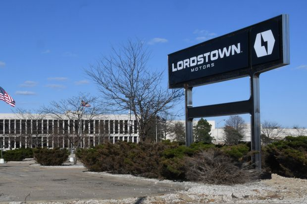 | |
| 2021-06-17 10:26:00 | Life & Arts | Path for Olympics Clears After Japan Declares End to State of Emergency | Increase in Covid-19 vaccinations and improving public support make the Games likely to proceed | ||
| 2021-06-17 10:00:00 | World | After a Year of Denying Covid-19, Tanzania Orders Vaccines | East African nation shunned lockdowns, attracting a host of pandemic skeptics | Tanzania has lodged an order for coronavirus vaccines, the country’s presidency said Thursday, after the East African nation’s government spent a year denying the existence of the virus within its borders and becoming a magnet for Covid-19 skeptics from around the globe. Tanzania’s request for vaccines from the World Health Organization-backed Covax program, which distributes free Covid-19 shots to the world’s poorest countries, follows the death of President John Magufuli in March, when local doctors and church leaders were warning about a surge in infections. His successor and former deputy, Samia Suluhu Hassan, has tentatively instituted more transparency in the handling of the pandemic, opening several Covid-19 testing centers and wearing masks during public appearances. The country of nearly 60 million people was one of the last, and the most prominent, African nations to shun Covid-19 vaccinations, leaving Burundi and Eritrea as the only holdouts of the continent. A WHO spokesman said that he expects Tanzania to receive its first vaccines in the coming weeks and that the agency’s experts were working with the government on a detailed rollout plan. In June last year, Mr. Magufuli announced that Tanzania had defeated the pandemic through prayer and banned the testing and diagnosing of Covid-19. Doctors in public hospitals, barred from wearing face masks, say they were forced instead to classify infections or deaths they believed to be from Covid-19 as pneumonia, heart disease or other ailments. Some media organizations that reported on the virus were shut down. |
|
| 2021-06-17 09:47:00 | Business | Many Companies Want Remote Workers—Except From Colorado | After a new state law that requires employers to disclose salaries for open positions, some are advertising jobs available anywhere in the U.S. but Colorado | Big companies are hiring for remote positions that can be performed in any state across the U.S. except one: Colorado. At issue is a new Colorado law that requires companies with even a few employees in the state to disclose the expected salary or pay range for each open role they advertise, including remote positions. The rule’s aim is to narrow gender wage gaps and provide greater pay transparency for employees. To avoid having to disclose that information, though, some employers seeking remote workers nationwide are saying that those living in Colorado need not apply. Across the internet, an array of job listings state the work can’t be done in Colorado. At Johnson & Johnson, roles recently posted for a commercial finance senior manager and a senior manager in operations include this caveat: “Work location is flexible if approved by the Company except that position may not be performed remotely from Colorado.” At commercial real-estate giant CBRE Group Inc., an ad for a project management director notes in bold: “This position may be performed remotely anywhere within the United States except the State of Colorado.” At pharmaceutical distributor McKesson Corp. , postings for a sales specialist and a research quality manager include similar disclaimers. Job listings for a scientist, an account executive and a manager of international tax planning at rival Cardinal Health Inc. also note: “This is a remote, work from home position. This role is to be filled outside of the state of Colorado.” Johnson & Johnson and CBRE declined to comment, and McKesson and Cardinal Health didn’t respond to requests for comment. |
|
| 2021-06-17 09:40:00 | Politics | Biden Wants to Focus on China, but Putin and Russia Crises Remain a Distraction | The U.S. president has attempted to realign diplomatic, military and economic resources to better counter Beijing | 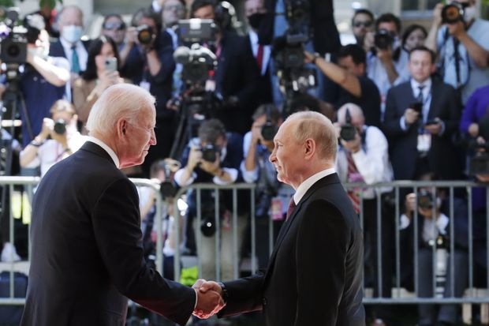 | |
| 2021-06-17 09:31:00 | Markets | Gold Price Drops, Dollar Rallies After Fed Nods at Inflation Risks | Price of gold declines by most in almost six months, while dollar continues Wednesday’s rally | Gold dropped sharply and the dollar rose Thursday after the Federal Reserve signaled it may raise interest rates sooner than expected. Gold futures declined 4.5%, the largest drop in over 10 months. That took gold down to $1,777.80 a troy ounce, its lowest since early May. The WSJ Dollar Index, which tracks the currency against a basket of others, advanced 0.3%. That added to its 0.8% gain on Wednesday, which was its biggest one-day gain since March 2020. Against the euro, the dollar rose another 0.5% Thursday, putting at about $1.19 per euro. Fed Chairman Jerome Powell Wednesday said the higher inflation recorded this year should be temporary, but the risks that it would persist couldn’t be ignored. Some members of the rate-setting committee brought forward their expectations of when rates might have to rise. |
|
| 2021-06-17 09:23:00 | Politics | Tech Industry’s Glory Days in Washington Are Over | Lobbyists for tech companies, many Obama veterans, now face tough crowd in Congress, White House | WASHINGTON—President Biden’s decision to name the progressive antitrust crusader Lina Khan to lead the Federal Trade Commission is a stark display of how far Silicon Valley has fallen out of favor in the nation’s capital. In Congress, Democrats and some Republicans are working to rein in the largest tech companies with proposals aimed at curbing their market power. Lawmakers are cheering antitrust probes by the Justice Department and Federal Trade Commission that could force these companies to shed acquisitions that were rubber-stamped by the government. In the White House, Mr. Biden has shunned job applicants with ties to large technology companies. His decision to appoint Ms. Khan as FTC chairwoman Wednesday made one thing clear: There is to be no sequel to the tech industry’s glory days during Barack Obama’s eight years in the White House. “In the last four or five years, the pendulum has swung in an overly dramatic fashion from ‘tech can do no wrong’ to ‘tech can do no right,’ ” said Adam Kovacevich, who spent 12 years as one of Google’s top lobbyists. He now leads a new tech group called Chamber of Progress aimed at wooing back Democrats. Tech industry lobbyists are challenged by the new reality. Facebook Inc.’s Washington roster until recently starred one of House Speaker Nancy Pelosi’s most trusted former aides, Catlin O’Neill, the granddaughter of former speaker Tip O’Neill. |
|
| 2021-06-17 09:12:00 | Markets | CureVac, Honest, Bank Stocks: What to Watch When the Stock Market Opens Today | The dollar continued to firm after its biggest one-day jump in more than a year | Stock futures are ticking lower after the Federal Reserve signaled that the days of easy monetary policy will be ending somewhat sooner than recently expected. Here’s what we’re watching ahead of Thursday’s opening bell. | |
| 2021-06-17 09:07:00 | World | Iran’s Presidential Election 2021: Who Are the Candidates and What Is at Stake? | Polls predict low turnout, reflecting voter frustration over economic crisis and restricted field of candidates | Iranians head to the polls Friday to elect a new president, as the Islamic Republic confronts challenges from a cratering economy to heightened tensions with its regional rivals. Many Iranians feel sidelined by Iran’s authoritarian clerical establishment. Millions plan to boycott the election. The country’s election watchdog, the Guardian Council, disqualified nearly all nonconservative candidates ahead of the vote, narrowing the choice among moderates and reformists while deepening the apathy of would-be voters. A new president would take over at a time when Iran and the U.S. are negotiating terms to revive the 2015 multilateral nuclear deal, which the Trump administration exited in 2018 before reimposing harsh economic sanctions. Iran’s foreign policy, in particular its relationship with Washington, is determined by Supreme Leader Ali Khamenei, but the country’s president can set the tone with the nation’s friends and adversaries alike. The incumbent, Mr. Rouhani, is barred by law from seeking a third term. Seven candidates were approved to run in the June 18 election, but the field narrowed to four after two hard-liners and the only reformist candidate bowed out. |
|
| 2021-06-17 08:46:00 | Markets | JPMorgan Buys Nutmeg to Bolster Digital Banking Push in U.K. | Digital wealth manager Nutmeg has around 140,000 customers and $5 billion in assets | JPMorgan Chase & Co. agreed to buy digital wealth manager Nutmeg Saving and Investment Ltd., part of a push to establish a retail banking presence in the U.K. Nutmeg, founded in 2012, has more than 140,000 customers and £3.5 billion under management, the equivalent of around $5 billion. A price for the acquisition wasn’t disclosed but people familiar with the transaction said it was between £500 million and £1 billion. JPMorgan said in January it would launch a new digital bank in the U.K., offering consumer banking services there for the first time. Called Chase, it is currently being tested internally with JPMorgan employees ahead of a public launch later this year. Nutmeg’s savings and investment products won’t initially be offered through the retail banking project, the bank said. JPMorgan is entering a crowded digital banking marketplace in the U.K. Regulators encouraged new startups, including Starling Bank Ltd. and Monzo Bank Ltd., to boost competition in the wake of the last global financial crisis. These so-called challenger banks have forced traditional lenders to improve their digital offerings but have struggled to earn profits. |
|
| 2021-06-17 08:43:00 | Markets | Floating-Rate Bonds Are Coming Back, Boosted by Bets on Rising Rates | Investors preparing for the Federal Reserve to boost rates are loading up on bonds with yields that track broader interest rates | Investors are snapping up bonds with yields that rise and fall with interest rates, spurring a wave of debt offerings by blue-chip companies. Nonfinancial companies including Verizon Communications Inc. and 7-Eleven have sold more than $18 billion worth of investment-grade bonds with variable interest rates this year through June 14, according to data compiled by Dealogic. That is nearly four times the amount issued in the same period last year. On Wednesday, Federal Reserve officials signaled that they expect to raise interest rates by late 2023, sooner than they had anticipated. The prospect of rising rates, even in the future, tends to make the fixed rates of traditional bonds less attractive. Accordingly, more investors are moving to floating-rate bonds, so that their portfolios will be at least partly cushioned against the impact of future rate increases. When including sales from U.S. banks, about $134 billion of floating-rate corporate bonds have been issued as of May, according to Bank of America Corp. That nearly matches the average annual issuance of $135 billion since 2008. Expectations for higher interest rates have also stoked investor demand for other assets with floating yields, such as corporate loans with junk credit ratings. |
|
| 2021-06-17 08:35:00 | Economy | Red-Hot U.S. Economy Drives Global Inflation, Forcing Foreign Banks to Act | Central banks are raising rates to fend off a rise in inflation as policy makers respond to the booming U.S. economy | A booming U.S. economy that is driving inflation higher around the world and pushing up the U.S. dollar is pressing some central banks to increase interest rates, despite still-high levels of Covid-19 infections and incomplete economic recoveries in their own countries. The world’s central banks are hanging on how the U.S. Federal Reserve will respond to a rise in inflation, wary of being caught in the crosscurrents of an extraordinary U.S. economic expansion. Global stock markets fell on Thursday after Fed officials signaled they expect to raise interest rates by late 2023, sooner than they anticipated in March, as the U.S. economy heats up. A global march toward higher interest rates, with the Fed at the center, risks stifling the economic recovery in some places, especially at a time when emerging-market debt has risen. The size of the U.S. economy, accounting for almost a quarter of world gross domestic product, and the importance of its financial markets have long exerted an outsize pull on global policy-making. But unusually brisk U.S. growth this year is critical to a world economy still recovering from last year’s shocks. Fed officials expect the U.S. economy to grow 7% this year, according to projections released Wednesday. Central banks in Russia, Brazil and Turkey have raised interest rates in recent weeks, in part to tamp down inflation stemming from the surge in commodities prices this year. As factories around the world strain to satisfy U.S. demand, commodities’ prices ranging from tin to copper have soared. |
|
| 2021-06-17 08:00:00 | CFO Journal | Home-Selling Startup Orchard Hires New CFO Ahead of Potential IPO | Patrick McClymont previously led the finances of movie theater chain IMAX and auction house Sotheby’s | ||
| 2021-06-17 08:00:00 | Politics | House to Vote on Repealing 2002 Iraq War Law | Tougher fight looms over 2001 force authorization, passed after 9/11 terrorist attacks | WASHINGTON—The House is expected to vote Thursday to revoke the 2002 law that authorized war in Iraq, reviving a long-simmering debate over Congress’s constitutional power to declare war and the commander in chief’s latitude to send American troops into combat abroad. The measure is expected to pass with bipartisan support, reflecting the growing unpopularity among American voters with the so-called forever wars. The Biden administration said in a statement Monday that it supported termination of the 2002 authorization for the use of military force, or AUMF. The U.S. has no continuing military activities that rely solely on the 2002 authorization, and the repeal likely would have “minimal impact on current military operations,” the statement said. President Barack Obama pulled U.S. troops out of Iraq in 2011, although a contingent returned later to aid the Iraqi government’s fight against Islamic State. Similar legislation in the Senate is expected to get a vote on June 22 in the Committee on Foreign Relations. On Wednesday, Senate Majority Leader Chuck Schumer (D., N.Y.) voiced his support for repealing the 2002 AUMF and pledged to bring the matter to the floor for a vote this year. |
 |
| 2021-06-17 07:59:00 | Markets | Grocery Delivery Idea Looks Far From Fresh | Boxed Inc.’s success seems highly dependent on its technology | Grocery sellers are among the least loved stocks in the market. Boxed Inc., a grocery courier planning to go public, had better hope investors see it as a tech company instead. The company, which delivers groceries in bulk out of its own fulfillment centers, announced Monday that it plans to go public in a SPAC deal with Seven Oaks Acquisition Corp. The deal is expected to close in the fourth quarter. It won’t be the only online grocery company looking to debut in public markets: Instacart is expected to do so later this year. It may be tough to whet the market’s appetite. Albertsons’ Cos., which went public last year at the height of the pandemic food-at-home boom, made its debut below its offering price. For Boxed in particular, it won’t help that its revenue grew just 8% in fiscal year 2020—a pace that matches supermarket giant Kroger ’s . That growth pace is troubling considering that its revenue base is roughly one-thousandth that of the supermarket chain. It also looks unflattering compared with Target’s 19.8% growth and Amazon ’s 37.6%. Moreover, its pace has slowed from the high levels at the start of the pandemic last spring. Boxed is betting that its technology will be the differentiator: Automation technology should cut down on its own operational costs while its software can bring in additional revenue. That seems more promising than relying just on the hypercompetitive grocery space. But in fiscal year 2020, its software brought in just 6.4% of total revenue and giants Shopify and Wix already dominate the space. Timing is also far from ideal: Many retailers that shifted to online selling presumably did so last year. Another way it plans to pad the bottom line is through selling ad spaces to vendors and fees through a third-party marketplace. The problem is that giants such as Walmart , Kroger and Target all doubled down on this strategy last year; competition for vendors’ ad dollars and third-party sellers is fierce. |
|
| 2021-06-17 07:29:00 | Politics | Lawmakers to Press Biden Administration on Americans Held Hostage Overseas | Bipartisan pair forms congressional task force to help the families of hostages and provide resources for fellow lawmakers | WASHINGTON—A pair of lawmakers has formed a working group in Congress to bolster U.S. government efforts to aid Americans held hostage or unlawfully detained abroad. Set to launch Thursday, the Congressional Task Force on American Hostages and Americans Wrongfully Detained Abroad aims to assist the families of Americans held hostage or wrongfully detained, to provide resources for fellow lawmakers, and to communicate with the administration on the issue. It is led by Reps. French Hill (R., Ark.) and Ted Deutch (D., Fla.). The task force’s formation “gives us hope that our government and our Congress are doing all they can to bring our loved one and all Americans held abroad home,” said Samar Hamwi and Mouna Kamalmaz, the sister and mother, respectively, of Majd Kamalmaz, a Virginia therapist who has been missing since being stopped at a Syrian checkpoint in 2017. The congressmen expect more colleagues to join the task force, which is meant to formalize existing work among members, following its launch Thursday. Mr. Deutch co-sponsored legislation passed last year intended to strengthen U.S. efforts to return Americans held abroad. |
|
| 2021-06-17 07:13:00 | Markets | Ending the Cycle of Scandal at Toshiba | Shareholders finally have a chance to clear out the ailing Japanese company’s board following explosive revelations on governance | Toshiba was once a world-famous brand for laptops and televisions. In recent years the 146-year-old Japanese industrial icon has become better known for scandals. The latest one should finally pave the way for a complete overhaul of the company. An independent report by outside lawyers looking at events leading up to last year’s annual general meeting found that Toshiba had colluded with the government to fend off foreign activist investors using questionable tactics. The 139-page report, released June 10, said Toshiba was “trying to effectively prevent shareholders from exercising their rights through undue influence.” In last year’s meeting, Singapore-based hedge fund Effissimo Capital failed to get its own candidates onto Toshiba’s board and the company’s former chief executive narrowly won re-election. The explosive revelations shine a spotlight on this year’s shareholder meeting, to be held June 25. Toshiba said Sunday that two executives and two outside directors would resign, but more heads need to roll. Investor advisory firms Glass Lewis and Institutional Shareholder Services have recommended that shareholders vote against three other directors put forward by the company, including board Chairman Osamu Nagayama. And investors have a chance of kicking them out. Shareholders from outside Japan own more than half of Toshiba, as a result of the $5.3 billion capital raising in 2017 that followed the collapse of its U.S. nuclear business. In March, shareholders voted in favor of an independent inquiry despite the company’s opposition, which is what led to last week’s report. The scandal hasn’t stopped Toshiba’s stock from having one of its best years in recent history. It is up 67% so far to levels not seen since 2016, before the company announced billions of losses from its nuclear unit. |
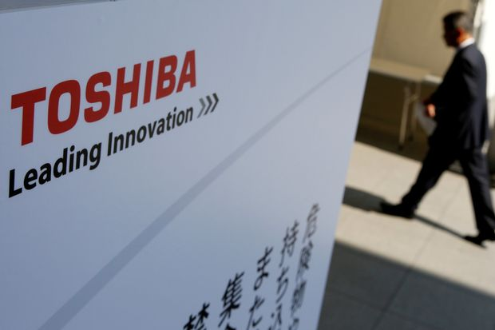 |
| 2021-06-17 07:10:00 | Markets | Tesla and Other Bubble Stocks Have Deflated Just Like 2000 | Fashionable areas of clean energy, electric cars, cannabis stocks and SPACs have dropped sharply this year, in an echo of the dot-com era | Is the dot-com bust happening again right under our noses? It might seem an odd claim, but there is a remarkable resemblance between the speculative boom-to-bust of late 1999 and the first half of 2000 and what’s happened over the past nine months in the fashionable areas of clean energy, electric cars, cannabis stocks and SPACs. If the parallel continues it bodes ill for investors who joined the excess late. The trendy stocks—led by Tesla—are already down a quarter to a third from this year’s highs. But there are reasons to hope that, unlike at the turn of the century, the malaise won’t spread to the rest of the market. The similarities are in both performance and investor behavior. The late-1999 fear of missing out on internet stocks inflated the Nasdaq Composite 83% from the end of September to its March 2000 top. From September last year to this year’s highs, Invesco ’s solar exchange-traded fund jumped 88%, Blackrock’s global clean energy ETF jumped 81%, and Ark’s innovation ETF 70%. Back then the leading large bubble stock Cisco rose 133%, while today’s leading bubble stock—Tesla—was up 110% from September to peak. Pure dot-com areas roughly tripled, just as cannabis funds have this time. Even the time of year is similar, with the fashionable sectors peaking in February and March this year, while the dot-com high was reached on March 10, 2000. After the bubble burst, the performance by mid-June—now—followed the same course, with losses of a quarter to a third from this year’s frothy areas, and a loss of a quarter in the Nasdaq in 2000 ( Cisco held up a little longer). |
|
| 2021-06-17 06:44:00 | Business | CureVac Shares Plunge Premarket on Disappointing Covid-19 Vaccine Trial | Vaccine was 47% effective in an analysis of a trial, says the company, which attributed the poor performance to variants |  |
|
| 2021-06-17 06:36:00 | Markets | Global Markets Slip and Dollar Extends Rally on Fed’s Rate Outlook | S&P 500 futures pull back, suggesting American markets could ease lower for a third day | Global markets slipped Thursday, with the U.S. dollar extending its rally while gold prices retreated after Federal Reserve officials signaled their intention to raise interest rates sooner than previously forecast. Futures linked to the S&P 500 index edged down 0.3%, suggesting that the broad U.S. market gauge will drop at the open a day after closing 0.5% lower. Nasdaq-100 futures declined 0.5%, pointing to a sharper retreat in technology stocks. Dow Jones Industrial Average futures ticked 0.3% lower. Gold fell 2.9% Thursday, the most in almost six months, to $1,807.00 a troy ounce. The precious metal, which doesn’t offer any income to investors, came under pressure as the prospect of higher rates made yield-bearing investments relatively more attractive. The WSJ Dollar Index, which tracks the U.S. currency against a basket of others, advanced 0.4%. That added to its 0.8% gain Wednesday, which was its biggest climb in more than a year. Investors’ risk appetite ebbed after Fed officials Wednesday gave the clearest signals yet of their plans to gradually pull back the easy monetary policies that helped propel markets to record highs. Their median projection showed they see lifting their benchmark rate to 0.6% by the end of 2023, sooner than they anticipated in March. |
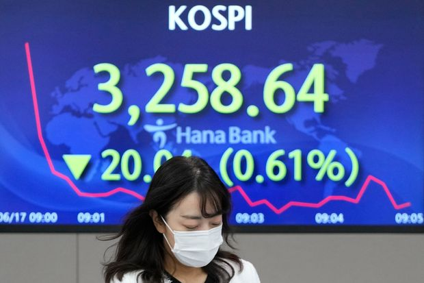 |
| 2021-06-17 06:30:00 | CMO Today | TV Operators Team Up to Simplify Fragmented Ad Market | Comcast, Charter Communications and Vizio, among others, have created a consortium to identify ways to simplify and scale an increasingly complex TV ad business | ||
| 2021-06-17 06:30:00 | Finance | Cambridge Mobile Buys Rival as Telematics Helps Set Car-Insurance Payments | Deal with TrueMotion aims to improve the gauges of drivers’ habits sold to auto insurers and create new ones | Cambridge Mobile Telematics, one of the largest technology firms focused on the growing business of collecting information about individuals’ driving habits directly from their vehicles, has purchased TrueMotion, one of its rivals. Existing telematics technology relies heavily on smartphone apps that score behaviors such as hard braking, speeding and acceleration patterns, and some technology also monitors distracted driving. Use of the technology by car insurers has surged in recent years because of its ability to identify safer versus riskier drivers. For decades, insurers have used such factors as age and credit score to determine the prices paid by individuals. Now many maintain that driving habits are a fairer gauge of a person’s accident risk. In a deal expected to be announced early Thursday, Cambridge Mobile said it had closed on the purchase of TrueMotion for an undisclosed price. After combining, Cambridge Mobile is to provide telematics services to 21 of the 25 largest auto insurers in the U.S. based on premiums, with clients including some of the largest auto insurers in Australia, Canada, Japan, South Africa and the U.K. The deal paves the way for the two Boston-area firms to combine workforces to improve existing offerings sold to car insurers and invent new products. Between them, they employ close to 400 people, many of them computer scientists, data experts and engineers. |
|
| 2021-06-17 06:26:00 | World | Hong Kong Police Arrest Apple Daily Editor Under China National Security Law | Police search newsroom as they step up investigations into media mogul Jimmy Lai’s Apple Daily | HONG KONG—National security police in Hong Kong arrested the top editor of a popular pro-democracy newspaper and searched the company’s newsroom, in the most targeted action involving a media organization’s journalistic operations yet in a yearlong crackdown on dissent. Apple Daily’s editor in chief, Ryan Law, was photographed on Thursday being led away in handcuffs by officers from his home in the Quarry Bay neighborhood. The raid was the latest in a series of moves against the newspaper group and its publisher, Jimmy Lai, a multimillionaire Beijing critic. Scores of police, armed with a warrant they said covered the “power of searching and seizure of journalistic materials” under the national security law, also searched the Apple Daily newsroom. The newspaper reported that officers were looking through computers and searching desks. Four other directors of the company were also arrested. Police said all five were detained under suspicion of “collusion with a foreign country or with external elements to endanger national security.” Steve Li, a senior police superintendent, told reporters that the publication has conspired with others to request foreign countries, organizations and individuals to impose sanctions against Hong Kong and China. More than 30 Apple Daily articles were involved, and authorities froze the equivalent of $2.3 million from three related companies: Apple Daily Ltd., Apple Daily Printing Ltd. and AD Internet Ltd. |
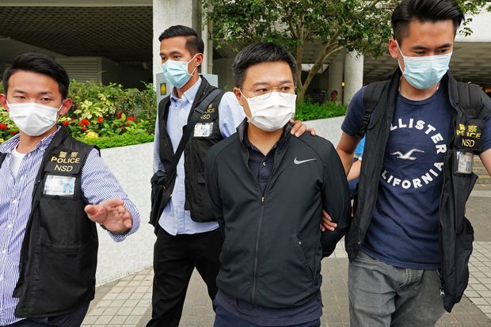 |
| 2021-06-17 06:22:00 | Markets | A Homegrown Opportunity for Europe’s Beleaguered Banks | Domestic mergers are relatively unpopular, but could be one of the few ways for European lenders to boost returns | As pandemic restrictions ease and business resumes, European banks return to the challenge of growing profits despite rock-bottom interest rates. One prospect that doesn’t get enough attention is the deals that might turn up on their doorstep. Vaccine rollouts are ushering in an economic recovery in Europe just as the trading boom that has carried many banking results over the past year is normalizing. The territory in view is depressingly familiar for the region’s lenders: Trying to boost profits in an overbanked, fragmented market with persistently ultralow interest rates, while competing with larger, more profitable U.S. rivals. Higher interest rates seem unlikely. Eurozone inflation inched up to 2% in May and is expected to continue rising this year, but to nowhere near the U.S. levels seen recently. While the Federal Reserve in Washington on Wednesday raised the specter of rate rises starting in 2023, European benchmarks are almost certain to remain very low for years yet. Many banks’ preferred solution is merging with a big rival to create a pan-European lender with the scale to cut costs and take on American banks globally. Such cross-border mergers are no panacea, but could work. However, the region’s current regulations stand in the way and proposals to change those rules remain stalled. A less-discussed option is a local merger. Europe’s big lenders already make decent returns in their home markets, thanks to deeply rooted expertise, brands and operational scale. Building on their domestic strengths might be a more straightforward approach than fixing their global weaknesses. |
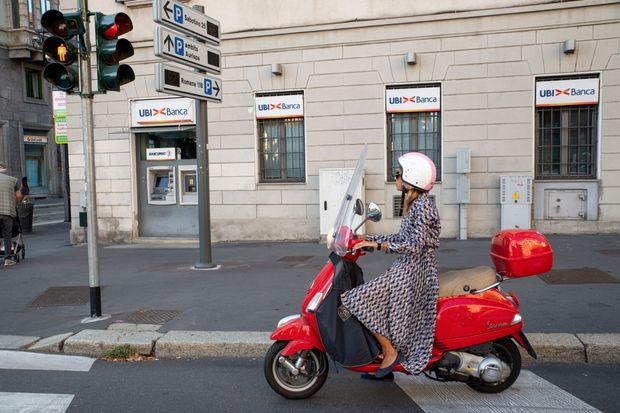 |
| 2021-06-17 06:00:00 | Life & Arts | Phil Mickelson Tries to Win His First U.S. Open at Home | Coming off a historic win at the PGA Championship, the 50-year-old has a rare chance to top it with something he’s never done before | SAN DIEGO—Phil Mickelson can’t count the hours he spent at Torrey Pines as a kid. He was born in San Diego, just a short drive away from one of the most fabulous golf grounds in the world. His local muni was a course that routinely hosts PGA Tour events and even majors like this U.S. Open. Now Mickelson wants to ride the tidal wave from his surreal win in the PGA Championship back home to Torrey Pines to try to win his first U.S. Open. He has six major wins, but has never won the U.S. Open, despite finishing second or tied for second a whopping six times. His most famous performance at a U.S. Open is when he spectacularly collapsed at the 2006 event. That’s also why, when Mickelson tees off at 10:51 a.m. ET on Thursday, he’ll be surrounded by throngs of fans screaming for an even more magical finish than the one he delivered at the PGA Championship. He has the chance at winning his first U.S. Open in his childhood home. Yet he doesn’t claim to have an insider’s advantage. He jokes that he struggles to even get onto the South Course at Torrey Pines these days. “It’s hard to get a tee time out here,” he said this week. He added: “I don’t play it other than the tournament.” The bigger problem is that his relevant experience with the course has faded over the years. Mickelson turned 51 years old on Wednesday. He’s the oldest person to ever win a major. And Torrey Pines doesn’t resemble the Torrey Pines he grew up on. |
|
| 2021-06-17 05:30:00 | Economy | Unemployment Claims Trend Closer to a Labor Market Normal | Weekly benefits filings are approaching the long-term average, though the number of those receiving jobless aid remains high | Worker filings for initial unemployment benefits have in recent weeks dropped closer to what economists consider a normal range as they have reached fresh pandemic lows, a sign Covid-19’s impact on the labor market is continuing to recede as employers shed fewer workers. Initial jobless claims for the week ended June 12 are projected to decline to a new pandemic low of 360,000, from 376,000 for the week earlier, according to economists surveyed by The Wall Street Journal. The estimated decline comes as Covid-19 restrictions continue to wane. California, the state with the largest population, fully reopened its economy Tuesday. The steady recent decline in jobless claims is bringing weekly totals closer to what would indicate a more typical labor market. The long-term average of initial jobless claims dating back to 1967—including periods of expansion and recession—is 371,763, according to Labor Department data. The four-week moving average for the week ended June 5 was 402,500. Adam Kamins, director of economic research at Moody’s Analytics, said he thinks the normal range is lower, between 200,000 and 250,000, without factoring in recessions. “More and more consumer-facing industries that were decimated by the pandemic are coming back online,” Mr. Kamins said. He added that in his view a level in the low to mid 200,000s “would be the indicator that we’ve leveled off.” |
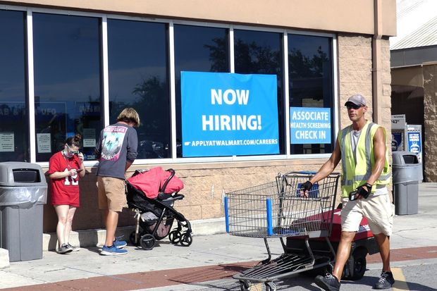 |
| 2021-06-17 05:30:00 | Europe | U.S., EU Forge Closer Ties on Emerging Technologies to Counter Russia and China | EU’s Vestager, bane of U.S. tech giants, touts promise of trans-Atlantic alignment | BRUSSELS—The U.S. and European Union plan to cooperate more on technology regulation, industrial development and bilateral trade following President Biden’s visit, in a bid to help Western allies better compete with China and Russia on developing and protecting critical and emerging technologies. Central to the increased coordination will be a new high-level Trade and Technology Council the two sides unveiled Tuesday. The aim of the TTC is to boost innovation and investment within and between the two allied economies, strengthen supply chains and avert unnecessary obstacles to trade, among other tasks. “You see the possibility for alignment,” said European Commission Executive Vice President Margrethe Vestager in an interview. In a sign of both sides’ aspirations for the council, it will be co-chaired on the U.S. side by Secretary of State Antony Blinken, Commerce Secretary Gina Raimondo and U.S. Trade Representative Katherine Tai. The EU side will be co-chaired the Ms. Vestager, the bloc’s top competition and digital-policy official, and fellow Executive Vice President Valdis Dombrovskis, who handles trade. As the EU’s top antitrust enforcer, Ms. Vestager has gained prominence for her cases against U.S. tech giants including Apple Inc., Google parent Alphabet Inc. and Facebook Inc. Former presidents Barack Obama and Donald Trump both said her policies unfairly targeted American companies. |
 |
| 2021-06-17 05:30:00 | Markets | Green SPACs Struggle After Years of Success | Investors are souring on blank-check companies in general | SPACs and green companies were two of the hottest pandemic investments. Combining the two—green SPACs—has been even more profitable, but there is evidence this is changing. Special-purpose acquisition companies that pledge to merge with renewable-energy, electric-vehicle and other sustainable businesses raised more than $120 billion since March 2020. SPACs, known as blank-check companies, raise cash from investors with the goal of buying a private company. For years, those deals have paid off. Going back to 2016, green-focused SPACs that have completed their acquisitions have outperformed other SPACs that have done deals, according to a Dow Jones Market Data analysis of information provided by SPAC Research. In the 90 days after their deals closed, SPACs with a green focus posted average share-price gains of just over 10%, according to that analysis. Share prices of all other SPACs fell by an average of 3%. Share prices of SPACs often rise after deals are announced and then weaken after the deals close. Enthusiasm for SPACs, especially green ones, has waned in recent months. Since late last year, shares of green-focused companies that have announced acquisitions but have yet to close their deals have fallen by an average of 24% in 90 days after the deals were announced; shares of other SPACs have fallen by an average of 9%. |
|
| 2021-06-17 05:30:00 | Markets | Market-Beating China Fund Manager Favors Scooters and Spicy Sauce Over Tech | Michelle Leung’s Xingtai Capital looks for stocks of companies with a solid earnings record, fast prospective growth and modest valuations | HONG KONG—Michelle Leung is used to standing out, as a China-focused stock picker who doesn’t follow the crowd and as a top female professional in the male-dominated fund-management industry. She is the founder of Xingtai Capital Management Ltd., a firm with offices in Hong Kong and Shanghai that oversees around $600 million in assets and counts institutions from the U.S., Europe and Asia as investors. As of May, the firm’s flagship Xingtai China Fund generated an annualized 33.9% return in the past five years, net of fees. That is more than double the 14.5% return on its benchmark, MSCI Inc.’s China index. The performance gap is even wider this year. For the first five months of 2021, the fund’s return was 16.3%, compared with MSCI China’s 1.7%. Ms. Leung has a somewhat unconventional approach to stock selection. Xingtai avoids companies that have yet to turn a profit, putting swaths of China’s popular technology sector off-limits. The fund also doesn’t hold stocks of the country’s internet giants, including Alibaba Group Holding Ltd. and Tencent Holdings Ltd. |
|
| 2021-06-17 05:15:00 | Markets | U.K. Fintech Wise to Go Public in London Direct Listing | Money-transfer service, formerly known as TransferWise, has boomed during pandemic | Wise, an online money-transfer service, kicked off plans to list on the London Stock Exchange , taking advantage of surging investor interest in financial technology companies. The U.K.-based startup, formerly known as TransferWise, didn’t disclose a target valuation for the initial public offering, but it could reach between $6 billion and $7 billion, according to a person familiar with the matter. The company was founded a decade ago by Estonian entrepreneurs Taavet Hinrikus and Kristo Käärmann. More than 10 million customers use Wise’s money-transfer service. It aims to make it easier and cheaper to move money across borders and into different currencies than with a bank. “We were both sick of losing money to our banks,” Mr. Käärmann told journalists Thursday about why he and Mr. Hinrikus started Wise in 2011. Wise charged an average price of 0.68% of the amount of money transferred in the first quarter of 2021. Credit cards and banks have traditionally charged several percentage points for similar transactions. |
|
| 2021-06-17 04:03:00 | Earnings | TikTok Owner ByteDance’s Annual Revenue Jumps to $34.3 Billion | ByteDance’s gross profit rose 93% to $19 billion last year, according to a memo to staff | ||
| 2021-06-17 04:00:00 | Life & Arts | Their Win Probability Was 0.3%. The Hawks Won. | The Sixers had a 99.7% chance to beat the Hawks. That number might sound familiar to Atlanta sports fans. | ||
| 2021-06-16 23:23:00 | Business | Juneteenth Moves Closer to National Holiday Status | As legislation moves to President Biden’s desk, more companies are expected to consider giving the day off to employees | The House voted 415-14 to make June 19, or Juneteenth, a national holiday commemorating the end of slavery in the U.S., the first new federal holiday created by Congress in nearly four decades. Cheers broke out across the House chamber late Wednesday, as Rep. Sheila Jackson Lee (D., Texas), the bill’s sponsor, read the final vote tally. The Senate unanimously passed the bill Tuesday, and President Biden is expected to sign it. The law would give the day the same status as Memorial Day, Veterans Day, Thanksgiving and other federal holidays. Congressional leaders from both parties said that establishing the holiday was an important gesture in recognizing those who suffered under American slavery and as an act of racial reconciliation. Juneteenth would be the first federal holiday to be created by Congress since 1983, when lawmakers designated the third Monday in January as Martin Luther King Jr. Day, in honor of the slain civil-rights leader. Juneteenth—also known as Emancipation Day, Black Independence Day and Jubilee Day—marks the 1865 date when Maj. Gen. Gordon Granger arrived with federal troops in Galveston, Texas, and issued an order freeing the nation’s last slaves. The ratification of the 13th Amendment to the U.S. Constitution in December 1865 abolished slavery throughout the entire country. |
|
| 2021-06-16 22:35:00 | U.S. | New York City Mayoral Candidates Spar in Heated Final Debate | The candidates sought to differentiate themselves throughout the two-hour debate on a range of topics ahead of the June 22 primary | New York City mayoral candidates came out swinging in the final Democratic debate before the June 22 primary, lacing into one another over their plans for reducing crime and improving quality of life after the Covid-19 pandemic. Thursday night’s televised debate featured the top eight Democratic candidates and capped weeks of intense campaigning and attacks on the front-runners. The candidates made their pitch for why they should lead the city while taking flak from their opponents. When asked about street homelessness, former presidential candidate and entrepreneur Andrew Yang said he believed there should be more psychiatric-ward beds for those who need it. City Comptroller Scott Stringer, who has highlighted his government experience while campaigning, ridiculed Mr. Yang for not having any sense of the cost of such a plan. “That is the greatest non-answer I’ve ever heard in all of our debates,” he said. “Not one specific idea, not one specific plan.” Throughout the two-hour debate, the candidates tried to differentiate themselves on a range of topics, from the desegregation of schools to affordable housing. |
|
| 2021-06-16 21:48:00 | World | Chinese Astronauts Lift Off in Mission to Staff Space Station | The three former members of China’s air force are being feted as heroes in a rapidly advancing space program | HONG KONG—Thirteen years after former fighter pilot Liu Boming participated in China’s first spacewalk, the 54-year-old astronaut was sent into space again Thursday morning to notch another milestone as part of the first mission to staff the nation’s new space station. Mr. Liu and two other former members of the People’s Liberation Army Air Force blasted off aboard Shenzhou-12—“Divine Vessel” in Chinese—with a Long March-2F carrier rocket from a launch center in northwest China. The spaceship is expected to dock later Thursday with the already orbiting Tianhe module and the astronauts will spend three months there, including two planned spacewalks. Before the launch, the astronauts were escorted by a motorcade down an avenue lined with Chinese national flags to the launchpad in the Gobi Desert on a clear-sky morning. Their mission comes as China undertakes increasingly bold endeavors in space and days before the country celebrates the July centenary of the founding of its ruling Chinese Communist Party. China’s astronauts are being feted as heroes by state media as symbols of China’s rapidly advancing space program, which is promoted as a source of national pride. |
|
| 2021-06-16 20:27:00 | Business | Condé Nast Agrees to Contract With New Yorker Union, Averting Strike | First-ever labor deal at media company comes after 2½ years of negotiations, also covers employees at Ars Technica and Pitchfork | Condé Nast has agreed to its first contract with unionized employees at the New Yorker and two other publications, marking the media company’s first labor agreement in its history and averting a threatened strike after 2½ years of negotiations. The three-year deal, which also covers staffers at music website Pitchfork and technology publication Ars Technica, raises the salary floor to $60,000 in the final year of the contract, places a cap on healthcare cost increases and establishes a defined 40-hour workweek. It also includes stipulations that employees can be fired only for cause, an issue that had been a sticking point in the contract talks. “Thanks to our members’ hard work, the era of at-will employment and wage stagnation at the New Yorker is finally over,” said Natalie Meade, unit chair of the New Yorker Union. “Throughout two and half years of negotiations, our union remained steadfast in our commitment to improve the quality of life for ourselves and for future employees.” The deal comes amid a continuing wave of labor organizing in media companies around the country over the past several years, from digital startups to legacy news organizations like Condé Nast that had never before had unions. Editorial employees at The Wall Street Journal have been unionized since 1937. Tensions around the New Yorker Union negotiations had risen in recent months after unionized employees voted to authorize a strike in March. Earlier in June, dozens of Condé Nast employees picketed outside the Manhattan home of Global Chief Content Officer Anna Wintour. Ms. Wintour, the longtime editor in chief of Vogue magazine, has gained a more expansive leadership role across Condé Nast in recent years but doesn’t oversee the New Yorker, which is led by Editor David Remnick. |
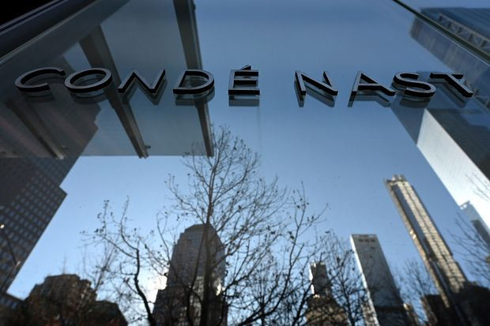 |
| 2021-06-16 19:54:00 | Politics | Texas Governor Says State Will Build a Wall Along Border With Mexico | Republican Greg Abbott cites President Biden’s rescinding of funding for Trump wall; Latino group to challenge legality of state effort | AUSTIN, Texas—The state will begin efforts to build its own wall along its border with Mexico, Texas Gov. Greg Abbott announced Wednesday, saying the state was prompted to take action since President Biden has pulled back on former President Donald Trump’s border wall plans. The state will use an initial $250 million of state funds to explore how to build the wall. Mr. Abbott, a Republican, said building a wall along areas of the border that don’t yet have one would allow state police to arrest and jail immigrants who cross it on trespassing charges. He said he would build more jails along the southern border to hold such people. States don’t have authority to enforce federal immigration laws. Mr. Abbott’s announcement came days after Mr. Biden’s administration said it would rescind funding for segments of a border wall allocated under Mr. Trump, and would explore returning to landowners property the federal government seized for the project. Mr. Abbott criticized Mr. Biden for not continuing work on the border wall, which had been the central promise of Mr. Trump’s 2016 presidential campaign. “Because they are not doing it, Texas taxpayers are having to step up,” Mr. Abbott said. Further money, he said, may come from private donations the state is now collecting via a website. Mr. Abbott called a surge of immigration at the southern border an “invasion” that is causing problems for residents there. The League of United Latin American Citizens, the nation’s largest Latino civil rights organization, indicated in a news release that it intends to fight Mr. Abbott’s move in court. Domingo Garcia, LULAC’s national president, called the effort a waste of taxpayer money and an illegal use of state powers. |
|
| 2021-06-16 19:43:00 | U.S. | Derek Chauvin Prosecutors Reject Allegations of Juror Misconduct in Trial | Minnesota prosecutors also say they and the judge behaved properly during the trial of former police officer convicted of murdering George Floyd | Minnesota prosecutors rejected defense allegations of juror and prosecutorial misconduct and judicial errors in the trial of former Minneapolis police officer Derek Chauvin, who was convicted in April of murdering George Floyd. In filings on Wednesday, prosecutors said Mr. Chauvin wasn’t entitled to a new trial or a special hearing to probe the conduct of juror Brandon Mitchell, who was the first voting member of the jury to publicly discuss the deliberations. Defense Attorney Eric Nelson has sought a new trial, arguing that the judge erred in not granting a change of venue or sequestering the jury, among other things. The prosecution said publicity in the case was so widespread that any jurisdiction in Minnesota would have been exposed to the same amount of media coverage and that the jurors were told to avoid media of any kind during the trial. Mr. Nelson also alleged that Mr. Mitchell had shown bias in his media appearances and had failed to disclose that he had attended a rally in Washington last August during which he wore a T-shirt that said “Get Your Knee Off Our Necks” and “BLM,” which stands for Black Lives Matter. The questionnaire asked if Mr. Mitchell had attended any antipolice rallies in Minneapolis. He said in interviews that he considered the march in Washington to be a civil-rights march, marking the Rev. Dr. Martin Luther King Jr.’s “I have a dream” speech. He also told local media he doesn’t remember owning or wearing the shirt. |
|
| 2021-06-16 19:26:00 | Tech | Microsoft Names CEO Satya Nadella Board Chairman | Nadella took over as chief executive in 2014, turning the software giant into America’s second largest company by value | Microsoft Corp. Chief Executive Satya Nadella will also assume the role of company chairman, the company said Wednesday. The move marks the second year in a row Microsoft’s board has undergone significant change after co-founder Bill Gates last year announced he was stepping down three months after having been re-elected to the board. Mr. Nadella, 53 years old, took over as Microsoft CEO in 2014 and helped restore the software company’s fortunes, in part by betting on the company’s cloud-computing business that has seen strong growth. He turned Microsoft into America’s second-largest company by value after Apple Inc. Microsoft now has a market value of topping $1.9 trillion. John W. Thompson, who preceded Mr. Nadella as chairman, returned to his role as lead independent director, a title he held from 2012 to 2014. He most recently served as the CEO of Virtual Instruments Corp. |
 |
| 2021-06-16 19:22:00 | National Security | CIA Names David Marlowe to Run Espionage Operations | Will oversee undercover officers who recruit foreign spies, from foreign government officials to members of terrorist networks | WASHINGTON—In his first major personnel move, CIA Director William Burns has tapped a 30-year agency veteran to run espionage operations at a time when the spy agency is increasing its focus on China and retooling human intelligence gathering in an age of growing digital surveillance. David Marlowe, who will serve as the new deputy director of operations, is a veteran officer who served overseas as the senior Central Intelligence Agency officer, known as station chief, “in several of the largest and most complex environments, including war zones,” a CIA spokeswoman said. Mr. Marlowe, whose position does not require congressional confirmation, will run a directorate at the agency’s Langley, Va., headquarters that oversees undercover officers who recruit foreign spies, ranging from foreign government officials to businessmen to disgruntled members of terrorist networks. The operations directorate also conducts covert actions abroad when directed by the president. The CIA spokeswoman described Mr. Marlowe’s appointment as a normal leadership change. He replaces Elizabeth Kimber, who in 2018 became the first woman to lead the operations directorate, which has been a male-dominated bastion throughout much of the CIA’s 73-year history. |
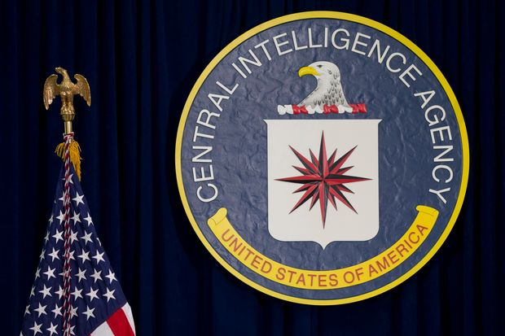 |
| 2021-06-16 19:04:00 | Politics | Biden Administration Reverses Trump-Era Policies Narrowing Asylum Terms | Attorney general vacates decisions in two cases involving domestic and gang violence for applicants | WASHINGTON—U.S. Attorney General Merrick Garland on Wednesday overturned two cases decided by the Trump administration Justice Department that made immigrants fleeing domestic or gang violence in their home countries generally ineligible for asylum in the U.S. In the first case, then-Attorney General Jeff Sessions had ruled in 2018 that domestic and gang violence are forms of private criminal activity generally not covered by asylum laws. In the second case, then-Attorney General Bill Barr in 2019 had stated that membership in a family—such as one being targeted by a gang or drug cartel—also generally couldn’t qualify someone for a grant of asylum. Messrs. Sessions and Barr had overturned decisions made by the Board of Immigration Appeals, an internal Justice Department body that acts as an appeals court for the immigration-court system. Unlike most other courts, immigration courts are run by the Justice Department and their rulings can be overturned by political officials. The Trump administration repeatedly said it believed migrants were taking advantage of expansive U.S. asylum laws, and officials took many steps to narrow eligibility to deter more migrants from coming. The Biden administration has been undoing those changes, and administration officials have said they are working on new rules through a federal regulation to more specifically define who can qualify for asylum. Mr. Garland’s decisions return asylum laws on gang and domestic violence to their parameters before the Trump administration. |
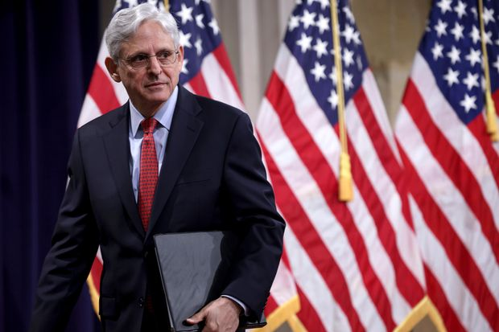 |
| 2021-06-16 18:50:00 | Economy | Behind Fed Confidence on Inflation, Some Anxiety Creeps In | Central bank is warily watching whether the public’s expectations of inflation are starting to head up | The Federal Reserve is sticking to its story. The factors that drove annual core inflation up to a near-30-year high of 3.8% in May are largely “transitory,” it said Wednesday. Chairman Jerome Powell reiterated the point several times in his press conference: “Our expectation is these high inflation readings…will start to abate.” The used-car price surge will reverse as that for lumber already did, he said. Fed officials expect inflation to slow from 3.4% at the end of this year to 2.1% by the end of next year and 2.2% by the end of 2023. The last two figures are each up just a tenth of a percentage point from their March forecast. But beneath the surface, some anxiety is creeping in. In March, just five of 18 Federal Open Market Committee participants thought risks to inflation were weighted to the upside. In June, that had risen to 13. In other words, a solid majority of Fed officials think inflation is more likely to turn out higher rather than lower than projected. Those shifting risks made their way into officials’ views on rates. The median projection is now for a half-percentage-point rate increase by the end of 2023, compared with the March expectation of no change. Why are officials in a greater hurry to raise rates now than in March given how little their forecasts changed? Mr. Powell said it was a matter of confidence. The Fed had laid out two conditions for eventually raising interest rates: inflation sustainably at 2% and expected to run moderately above that, and full employment. Many officials “are more comfortable that the economic conditions in [their] forward guidance will be met sooner than previously anticipated,” he said. “And that would be a welcome development.” That said, it appears their confidence in hitting the inflation goal has gone up more than their confidence in hitting the full-employment goal. In fact, taken at face value, the inflation goal may have already been hit. Inflation is now above 2%, and expected to be moderately above that for the next few years. |
|
| 2021-06-16 18:44:00 | Opinion | Biden’s Tests for Putin, and Vice Versa | He’ll have to respond if the Russian crosses the President’s red lines. | ||
| 2021-06-16 18:42:00 | Opinion | No Inflation Worries at the Fed | Powell says there’s no reason to tighten despite a booming economy. | Let’s try one of those multiple choice questions we all hated on SAT tests. Question: Which of the following doesn’t fit with the others? A) 7% GDP growth in 2021. B) A 5% increase in the consumer price index from a year earlier, and 3.8% in core prices excluding food and energy. C) A 4.5% unemployment rate by the end of this year, heading toward 3.8% next year. D) A federal funds interest rate of near-zero for another two years. |
|
| 2021-06-16 18:40:00 | Opinion | The California and Texas Greenouts | Renewables show again that they aren’t reliable to power the grid. | Electric grid operators in Texas and California are again urging residents to conserve power amid a sweltering heat wave to avoid blackouts. Keeping your thermostat at 78 degrees during the summer may be the green new normal. The Electric Reliability Council of Texas (Ercot) warned this week that a large number of unexpected power plant outages combined with surging demand is straining the grid. Meantime, California’s Independent System Operator forecast that electricity demand might exceed supply several days this week. For residents in both states, this must feel like deja vu. Last August Californians experienced rolling blackouts amid a heat wave that engulfed the Southwest. California generates half of its electricity from solar during summer afternoons, but it didn’t have enough power in the evenings when the sun faded. It also relies heavily on imports, but other states didn’t have power to spare. Now the problem is reoccurring while a severe drought also limits hydropower. In a few years the Diablo Canyon nuclear plant is scheduled to retire. The plant provides nearly 10% of the state’s power and backs up intermittent renewables. But green groups want the grid to run completely on solar, wind and batteries. Blackouts could soon become as common as wildfires. Californians who have moved to Texas are discovering that electric power is as green and flaky there too. Texas has drawn scores of wind developers cashing in on the federal renewable electricity production tax credit, which pays them for each unit of power they generate regardless of whether it’s needed. |